专题01 几何图形中的动点与动角探究问题（举一反三专项训练）
【北师大版2024】

【题型1 线段上的动点求时间问题】 1
【题型2 线段上的动点定值问题】 11
【题型3 几何图形中动角定值问题】 18
【题型4 几何图形中动角数量关系问题】 29
【题型5 几何图形中动角求运动时间问题】 37
【题型6 几何图形中动角求角度问题】 47
【题型7 线段与角中动态新定义问题】 57
【题型8 线段与角中动态多解问题】 66

【题型1 线段上的动点求时间问题】
【例1】（24-25七年级上·吉林·期末）如图，线段AB=24，动点P从A出发，以每秒2个单位的速度沿射线AB运动，运动时间为t秒t>0，M为AP的中点．

(1)用含t的代数式表示PB的长度为_____．
(2)在点P运动的过程中，当t为多少时，PB=12AM？
(3)在点P运动的过程中，点N为BP的中点，证明线段MN的长度不变，并求出其值．
(4)当点P在AB延长线上运动时，当M、N、B三点中的一个点是以另两个点为端点的线段中点时，直接写出t值．
【答案】(1)24−2t
(2)t=485或t=16
(3)MN的长度不变，其值为12
(4)t=18或t=36
【分析】（1）分两种情况讨论，当点P在线段AB上和点P在AB的延长线上时，即可求解；
（2）根据PB=12AM建立关于t的方程，解方程即可；
（3）分两种情况讨论，当点P在线段AB上和点P在AB的延长线上时，根据线段中点的定义得出PM=12AP=t，PN=12PB=12−t．再根据MN=PM−PN即可求解；
（4）根据（3）可得出N点在M,B的右侧，不能为中点，分两种情况讨论，①当B是MN的中点时，②当M是NB的中点，根据线段MN=12,结合图形列出方程，解方程，即可求解．
【详解】（1）解：当P运动到点B时，t=242=12
当点P在线段AB上，即0<t≤12时，
BP=AB−AP=24−2t；
当点P在AB的延长线上时，即t>12时，
BP=AP−AB=2t−24，
∴PB的长度为24−2t，
故答案为：24−2t．
（2）解：∵M是线段AP的中点，
∴AM=12AP=t，
∵PB=12AM，
∴24−2t=12t，
∴24−2t=12t或2t−24=12t，
解得t=485或t=16；
∴当t=485或t=16秒时，PB=12AM ；
（3）解：MN的长度不变，其值为12，证明如下：
当0<t≤12时，如图所示，
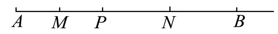
PB=24−2t
∵N是线段BP的中点，
∴ PN=12PB=12(24−2t)=12−t，
∵M是线段AP的中点，
∴ PM=12AP=t，
∴ MN=PM+PN=t+12−t=12，
∵MN的长度是一个常数，
∴ MN的长度不变，其值为12；
当t>12时，如图所示，
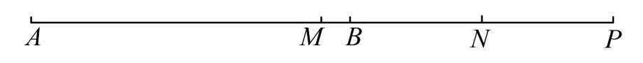
PB=2t−24
∵N是线段BP的中点，
∴ PN=BN=12PB=12(2t−24)=t−12，
∵M是线段AP的中点，
∴ PM=12AP=t，
∴ MN=PM−PN=t−(t−12)=12，
∴ MN的长度不变，其值为12；
（4）解：点P在AB延长线上运动时，t>12，
由（3）可得PB=2t−24，MN=12
∴PM−PN=MN=12>0，PB−PN=2t−24−t−12=t−12>0
∴N点在M,B的右侧，不能为中点，
分两种情况讨论，
①当B是MN的中点时，如图所示，
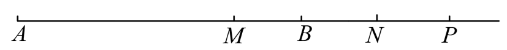
∴BM=BN=12MN=6
∴PM=AM=3BM=18
∵AM=PM=t
∴t=18；
②当M是NB的中点，如图所示，
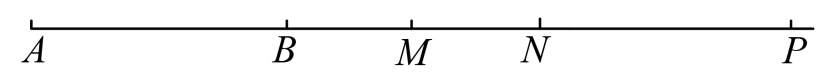
∴BM=MN=12，
∴BN=2MN=24，
∵N是线段BP的中点，
∴PB=2t−24=2BN=48，
解得：t=36，
综上所述，t=18或t=36．
【点睛】本题考查了线段的中点的性质，线段和差的计算，列代数式，一元一次方程的应用；数形结合，分类讨论是解题的关键．
【变式1-1】已知线段AD=60，点B、点C都是AD线段上的点．
(1)如图1，若点M为AB的中点，点N为BD的中点，则线段MN长为 ；
(2)若BC=10，点E是线段AC的中点，点F是线段BD的中点，请自己作图并求EF的长；
(3)如图2，若AB=5，BC=10，点P，Q分别从B、C出发向点D运动，运动速度分别为每秒移动1个单位和每秒移动4个单位，设运动时间为t秒，点E为AQ的中点，点F为PD的中点，若PE=QF，求t的值．
【答案】(1)30
(2)见解析，25或35
(3)t=103或t=8
【分析】本题考查了一元一次方程的应用及两点间的距离，分类讨论和正确列出方程是解题的关键．
（1）利用中点的推出MN=BM+BN=12AB+12BD=12AD即可求出答案；
（2）分两种情况讨论，点B在点C的左侧或点B在点C的右侧，结合图形，列式可求出答案即可；
（3）运动t秒后，AQ=AC+CQ=15+4t，从而可推PE=AE−AB−BP=152+2t−5−t=52+t，DF=12DP=552−t2，由PE=QF可得方程，解方程即可得出答案．
【详解】（1）解：∵M为AB的中点，N为BD的中点，
∴BM=12AB，BN=12BD，
∵AD=60，
∴MN=BM+BN=12AB+12BD=12AD=12×60=30；
故答案为： 30；
（2）如图，点B在点C的左侧，
∵点E是线段AC的中点，点F是线段BD的中点，
∴AE=12AC，DF=12BD，
∴EF=AD−AE−DF=AD−12AC+BD=AD−12AD+BC=12AD−12BC=12×60−12×10=25
如图，点B在点C的右侧，
∵点E是线段AC的中点，点F是线段BD的中点，
∴AE=12AC，DF=12BD，
∴EF=AD−AE−DF=AD−12AC+BD=AD−12AD−BC=12AD+12BC=12×60+12×10=35，
综上，EF的长为25或35；
（3）运动t秒后，AQ=AC+CQ=15+4t，
∵E为AQ的中点，
∴AE=12AQ=152+2t，
∴PE=AE−AB−BP=152+2t−5−t=52+t，
∵DP=DB−BP=55−t，F为DP的中点，
∴DF=12DP=552−t2，
又∵DQ=DC−CQ=45−4t，
∴QF=DQ−DF=45−4t−552+t2=352−72t，或QF=DF−DQ=7t2−352，
由PE=QF得：52+t=352−72t或52+t=7t2−352，
解得：t=103或t=8．
【变式1-2】如图1，已知直线l上线段AB=6，线段CD=2（点A在点B的左侧，点C在点D的右侧），BD=15．
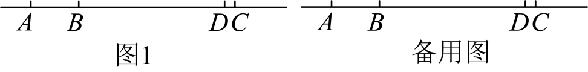
(1)求图1中所有线段的条数为______条：
(2)若线段AB从点B开始以2个单位/秒的速度向右运动，同时线段CD从点D开始以1个单位/秒的速度向左运动，当时间t在什么范围内，线段CD所有的点都在线段AB上？（含端点）
(3)若线段AB从点B开始以2个单位/秒的速度一直向右运动，同时，线段CD从点C开始以1个单位/秒的速度向右运动，当端点B与D初次相遇时，线段DC立即以原来速度的2倍向左运动，当端点C与端点A初次相遇时，线段CD的速度变为初始速度的12方向继续向左，问在整个运动过程中，时间t为何值时AC=1．
【答案】(1)6
(2)173≤t≤7
(3)t=674或t=875
【分析】本题主要考查了数轴上两点的距离计算，一元一次方程的应用，线段的条数问题：
（1）根据两点确定一条线段进行求解即可；
（2）当点B恰好与点C重合时，线段CD所有的点开始都在线段AB上，当点A恰好与点D重合时，线段CD所有的点最后都在线段AB上，据此求解即可；
（3）以A为原点，向右为正方向，建立数轴，则点A、B、C、D分别表示的数为0，6，23，21，设运动时间为t，当端点B与D初次相遇时，则6+2t=21+t，解得t=15，当点C与点A初次相遇时，30+2t−15=38−2t−15，解得t=17，再分当A、C相遇前， 当A、C相遇后，两种情况讨论求解即可．
【详解】（1）解：由题意得，图中的线段有线段AB，BD，CD，AD，BC，AC共6条线段，
故答案为：6；
（2）解：当点B恰好与点C重合时，则2t+t=15+2，解得t=173；
当点A恰好与点D重合时，则2t+t=6+15，解得t=7，
∴当173≤t≤7时，线段CD所有的点都在线段AB上；
（3）解：以A为原点，向右为正方向，建立数轴，则点A、B、C、D分别表示的数为0，6，23，21，
设运动时间为t，当端点B与D初次相遇时，则6+2t=21+t，解得t=15，
∴当端点B与D初次相遇时，点A、B、C、D分别表示的数为30，36，38，36，此后线段CD以2个单位长度每秒的速度向左运动，
当点C与点A初次相遇时，30+2t−15=38−2t−15，解得t=17，
∴当点C与点A初次相遇时，点A、B、C、D分别表示的数为34，40，34，32，此后线段CD以12个单位长度每秒的速度向左运动，
当A、C相遇前，AC=1时，则38−2t−15−30+2t−15=1，
解得t=674；
当A、C相遇后，AC=1时，则2t−17+12t−17=1，
解得t=875；
综上所述，t=674或t=875．
【变式1-3】点C是线段AB上一点，若AC=nBC（n为大于1的正整数），则我们称点C是(B,A)的最强CP点．例如，AB=10，AC=CD=DE=EB=2，则AE=3BE，称E是(B,A)的最强CP点；BD=2CD，则D是(C,B)的最强CP点．
(1)点C在线段AB上，若AB=14，n=4，点C是(B,A)的最强CP点，则AC= ．
(2)若AB=14，C是(B,A)的最强CP点，则AC= ．（用n的代数式表示）
(3)一直线上有两点A，B，AB=30cm，点C从B点出发，以每秒3cm的速度向A运动，运动到点A时停止．点D从点A出发，以每秒5cm的速度沿射线AB运动，t为多少时，点B，C，D恰好有一个点是其余2个点的最强CP点．（用n的代数式表示）
【答案】(1)145
(2)14nn+1n>1
(3)当t为308+3n或30n3+8n或30n+18n+5或30n+18+5m或30n5n−3或6+6n时，点B，C，D恰好有一个点是其余2个点的最强CP点
【分析】（1）根据“最强CP点”的定义计算即可；
（2）根据“最强CP点”的定义列式即可；
（3）将点C、D的运动分成未相遇，相遇后，点D经过点B后，和点C到达点A后四种阶段讨论，并且每个阶段又有可能有2种不同的CP点的情况．
【详解】（1）∵点C是(A,B)的最强CP点，
∴BC=nAC(n=4)，
∵AB=14，AB=BC+AC，
∴AC=145，
故答案为：145；
（2）∵C是(B,A)的最强CP点，
∴AC=nBC，
∴BC=ACn，
又∵AB=14，AB=BC+AC，
∴AB=AC+ACn=AC1+1n=AC⋅n+1n，
∴AC=n⋅ABn+1=14nn+1(n>1)，
故答案为：14nn+1(n>1)；
（3）解：根据题意，当AD=BC时D、C相遇，
∴5t=30−3t，
解得t=154，
阶段一：点D、C未相遇时，即0<t<154时，
①设t1时点C为(B,D)的最强CP点，
∴DC=nBC，
∵DC=30−5t1−3t1=30−8t1,BC=3t1，
∴30−8t1=3nt1，
解得t1=308+3n，
又∵DC>BC，即30−8t1>3t1，
∴0<t1<3011，
∵n为大于1的正整数，
∴t1=308+3n满足题意；
②设t2时，点C为(D,B)的最强CP点，
∴BC=nDC，
∵BC=3t2,DC=30−8t2，
∴3t2=n30−8t2，
解得t2=30n3+8n，
又∵BC>DC，即3t2>30−8t2，
∴3011<t2<154，
∵n为大于1的正整数，
∴t2=30n3+8n符合题意；
阶段二：点D、C相遇后，且点D未到达点B，即154≤t<6时，
③设t3时，点D为(C,B)的最强CP点，
∴BD=nCD，
∵BD=30−5t3,CD=5t3−30−3t3=8t3−30，
∴30−5t3=n8t3−30，
∴t3=30(n+1)8n+5，
又∵BD>CD，即30−5t3>8t3−30，
∴154≤t3<6013，
∵n为大于1的正整数，
∴t3=30(n+1)8n+5符合题意；
④设t4时，点D为(B,C)的最强CP点，
∴CD=nBD，
∵CD=5t4−30−3t4=8t4−30,BD=30−5t4，
∴8t4−30=n30−5t4，
∴t4=30(n+1)8+5n，
又∵CD>BD，即8t4−30>30−5t4，
∴6013<t4<6，
∵n为大于1的正整数，
∴t4=30(n+1)8+5n符合题意；
阶段三：点D经过点B后，且点C未到达点A，即6≤t<10时，
⑤设t5时，点B为(D,C)的最强CP点，
∴CB=nDB，
∵CB=3t5,DB=5t5−30，
∴3t5=5t5−30n，
∴t5=30n5n−3，
又∵CB>DB，即3t5>5t5−30，
∴6≤t5<15，
∴t5=30n5n−3符合题意；
⑥设t6时，点B为(C,D)的最强CP点，
∴DB=nCB，
∵DB=5t6−30,CB=3t6，
∴5t6−30=3t6n，
∴t6=305−3n，
又∵DB>CB，即5t6−30>3t6，
∴t6>15，
∴t6=305−3n不符合题意，舍去；
阶段四：点C到达点A后，即t≥10时，
∵CB=30,CD≥50，
∴点B不可能为(D,C)的最强CP点；
⑦设t7时，点B为(C,D)的最强CP点，
∴DB=nCB，DB=5t7−30，
∴5t7−30=30n，
∴t7=6+6n，
又∵DB>CB，即5t7−30>30，
∴t7>12，
∴t7=6+6n符合题意；
综上所述，当t为308+3n或30n3+8n或30(n+1)8n+5或30(n+1)8+5n或30n5n−3或6+6n时，点B，C，D恰好有一个点是其余2个点的最强CP点．
【点睛】本题考查了解一元一次方程，列一元一次方程解应用题，线段上的动点等问题，运用分类讨论的思想，正确地列出代数式表示出线段的长是解题的关键．
【题型2 线段上的动点定值问题】
【例2】（24-25七年级上·湖北武汉·期末）如图，点A，B，C，D是同一直线上从左到右依次排列的四点，AB=a，CD=b，且a，b满足：a−6+b−32=0，BC=15．

(1)a= ，b= ；
(2)线段AB以2个单位长度/秒的速度向右匀速运动，同时线段CD以1个单位长度/秒的速度向左匀速运动．
①求运动多少秒时，线段AB，CD重合的长度为2；
②当点B和C重合时，线段CD立即以原来2.5倍的速度向右运动，线段AB的运动状态不变，若线段CD向右运动过程中，式子2AC+mBD的值为定值n，请求m和n的值．
【答案】(1)6；3
(2)①173秒或223秒；②m=−2，n=6
【分析】本题主要考查了非负数的性质，两点间的距离，一元一次方程的应用，熟练运用数轴上两点之间的距离，分类讨论，是解题关键．
（1）根据非负数的性质即可求得答案；
（2）①设运动时间为t秒，当BC=2时，根据BC=15，得2t+t=15+2，解得t=173；当AD=2时，得2t+t+2=6+3+15，解得t=223；②设相遇后运动时间为x秒，则BC=0.5x，根据2AC+mBD=3m+12+0.5m+1x为定值n，得0.5m+1=0，得m=−2，n=6．
【详解】（1）解：∵a−6+b−32=0，且a−6≥0，b−32≥0，
∴a−6=0，b−32=0，
∴a=6，b=3；
故答案为6，3；
（2）解：①设运动时间为t秒，
当BC=2时，
∵点AB经过的路程为2t，点CD经过的路程为t，BC=15，
∴2t+t=15+2，
解得t=173；
当AD=2时，
∵AB=6，CD=3，
∴2t+t+2=6+3+15，
解得t=223；
故运动173秒或223秒时，线段AB，CD重合的长度为2；

②设相遇后运动时间为x秒，
∵AB运动路程为2x，CD运动路程为2.5x，
则BC=2.5x−2x=0.5x，
∴AC=AB+BC=6+0.5x，BD=BC+CD=0.5x+3，
∴2AC+mBD=26+0.5x+m0.5x+3=3m+12+0.5m+1x，
∵2AC+mBD的值为定值n，
∴0.5m+1=0，
∴m=−2，
∴n=3m+12=6．
故m=−2，n=6．
【变式2-1】如图，在数轴上的A点表示数a，B点表示数b，a、b满足a+22+b−5=0

(1)点A表示的数为____________，点B表示的数为______________.
(2)若在原点O处放一挡板，一小球甲从点A 处以2个单位/秒的速度向左运动；同时另一小球乙从点B处以3个单位/秒的速度也向左运动，在碰到挡板后（忽略球的大小，可看作一点）以原来的速度向相反的方向运动，设运动的时间为t（秒）．
①当t=1时，乙小球到原点的距离=__________________；
当t=3时，乙小球到原点的距离=__________________．
②试探究：甲、乙两小球到原点的距离可能相等吗？若不能，请说明理由；若能，请计算说明．
(3)现将小球乙看成动点P，当点P运动到线段OB上时，分别取OB和AP的中点E,F，试判断AB−OPEF的值是否为定值，若不是，请说明理由；若是，请求出该定值．
【答案】(1)−2，5
(2)①2，4；②能，当t=35或t=7时，甲、乙两小球到原点的距离相等
(3)AB−OPEF的值是定值，这个定值为2
【分析】（1）根据偶次方和绝对值的非负性求出a,b的值，由此即可得；
（2）①当t=1时，乙小球运动的距离为3，再利用OB的长减去3即可得；当t=3时，乙小球运动的距离为9，再利用9减去OB的长即可得；
②先求出乙小球从点B运动到原点O所需时间为53秒，再分两种情况：0<t≤53和t>53，分别建立方程，解方程即可得；
（3）先求出AB=7，点E表示的有理数为52，再分两种情况：①0<t≤53和②53<t≤103，分别求出OP,EF，代入计算即可得．
【详解】（1）解：∵a+22+b−5=0，
∴a+2=0，b−5=0，
解得a=−2,b=5，
则点A表示的数为−2，点B表示的数为5，
故答案为：−2，5．
（2）解：①∵点B表示的数为5，
∴OB=5，
当t=1时，乙小球运动的距离为1×3=3，
则乙小球到原点的距离为5−3=2，
当t=3时，乙小球运动的距离为3×3=9，
则乙小球到原点的距离为9−5=4，
故答案为：2，4；
②假设甲、乙两小球到原点的距离能相等，
乙小球从点B运动到原点O所需时间为5÷3=53（秒），
当0<t≤53时，则2t−−2=5−3t，
解得t=35，符合题设；
当t>53时，2t−−2=3t−5，
解得t=7，符合题设；
综上，当t=35或t=7时，甲、乙两小球到原点的距离相等．
（3）解：由（1）可知，AB=5−−2=7，点P从点B运动到点O，再从点O运动到点B所需时间为2×53=103（秒），
∵点E是OB的中点，点B表示的数为5，
∴点E表示的有理数为52，
①如图，当0<t≤53时，则运动t秒后，点P表示的有理数为5−3t，
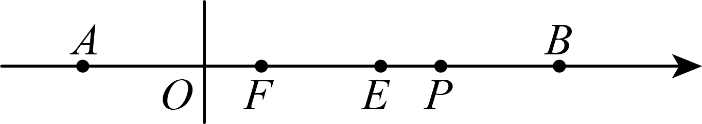
∴OP=5−3t，
∵点F是AP的中点，点A表示的数为−2，
∴点F表示的有理数为−2+5−3t2=3−3t2，
∴EF=52−3−3t2=2+3t2，
∴AB−OPEF=7−5−3t2+3t2=2；
②如图，当53<t≤103时，则运动t秒后，点P表示的有理数为3t−5，
∴OP=3t−5，
∵点F是AP的中点，点A表示的数为−2，
∴点F表示的有理数为−2+3t−52=3t−72，
∴EF=52−3t−72=12−3t2，
∴AB−OPEF=7−3t−512−3t2=2，
综上，AB−OPEF的值是定值，这个定值为2．
【点睛】本题考查了偶次方和绝对值的非负性、一元一次方程的应用、数轴、整式加减的应用、线段中点等知识点，熟练掌握数轴的性质是解题关键．
【变式2-2】（25-26七年级上·湖南衡阳·阶段练习）【知识准备】
①若点C在线段AB上，且把线段AB分成相等的两段，则称点C为线段AB的中点，也叫二等分点，若点P，点Q在线段DE上，且把线段DE分成相等的三段，则称点P和点Q为线段DE的三等分点；
②若数轴上点A对应的数为x，点B对应的数为y，M为AB的中点，则我们有中点公式：点M对应的数为x+y2．
（1）在一条数轴上，0为原点，点C对应的数为5，点D与点C的距离为7个单位长度，且位于点C左侧，则CD的中点N所对应的数为_______________；
【问题探究】
（2）在（1）的条件下，若点P从点C出发，以每秒1个单位长度的速度向左运动，同时点Q从点D出发，以每秒2个单位长度的速度向右运动．设运动时间为t秒，t为何值时，PQ的中点所对应的数为10？
【拓展延伸】
（3）若数轴上点A对应的数为x，点B对应的数为y，M为AB靠近点A的三等分点，则我们有三等分点公式：点M对应的数为2x+y3：若数轴上点A的对应数为x，点B的对应数为y，M为AB最靠近点A的四等分点，则我们有四等分点公式：点M对应的数为：3x+y4．
①填空：若数轴上点A的对应数为x，点B的对应数为y，M为AB最靠近点B的五等分点．则点M对应的数为_______________________．
②在（2）的条件下，若E是PQ最靠近Q的五等分点，F为PC的中点，则是否存在t，使得57OE+2OF为定值？若存在，请求出t的取值范围和此时的定值．若不存在，说明理由．
【答案】（1）32；（2）17；（3）①x+4y5；②当37≤t≤10时，57OE+2OF为定值，是947
【分析】此题主要考查了有理数与数轴，绝对值的意义，理解题意，读懂题目中新定义的分点公式，熟练掌握绝对值的意义，运用分类讨论思想进行分类讨论是解决问题的关键．
（1）求出点D对应的数，即可求解；
（2）根据题意可得点P所表示的数为5−t，点Q表示的数为−2+2t，再由PQ的中点所对应的数为10，列出方程，即可求解；
（3）①依题意可得出M对应的数；②根据题意可得点E表示的数为7t−35，点F所表示的数为5−12，从而得到OE=7t−35,OF=5−t2，进而得到57OE+2OF=t−37+10−t，然后根据绝对值的意义进行分类讨论即可得出答案．
【详解】解：（1）∵点C对应的数为5，点D与点C的距离为7个单位长度，且位于点C左侧，
∴点D对应的数为5−7=−2，
∴CD的中点N所对应的数为5−22=32；
故答案为：32
（2）由题意得，点P所表示的数为5−t，点Q表示的数为−2+2t，
∵PQ的中点所对应的数为10，
∴12−2+2t+5−t=10，
解得：t=17，
当t=17时，PQ的中点所对应的数为10；
（3）①根据题意∶点M对应的数为x+4y5，
故答案为∶x+4y5；
②由题意得，点E表示的数为5−t+4−2+2t5=7t−35，点F所表示的数为5+5−t2=5−t2，
∴OE=7t−35,OF=5−t2，
∴57OE+2OF=57×7t−35+2×5−t2=t−37+10−t，
当t<37时，57OE+2OF=37−t+10−t=1037−2t；
当37≤t≤10时，57OE+2OF=t−37+10−t=947；
当t>10时，57OE+2OF=t−37+t−10=2t−1037；
∴当37≤t≤10时，57OE+2OF为定值，是947．
【变式2-3】（25-26七年级上·陕西宝鸡·阶段练习）【知识准备】
若数轴上点A对应的数为x，点B对应的数为y，M为AB的中点，则我们有中点公式：点M对应的数为x+y2．
（1）在一条数轴上，O为原点，点C对应的数为c，点D对应的数为d，且有c−3+d+(d+2)2=0，则CD的中点N所对应的数为_______．
【问题探究】
（2）在（1）的条件下，若点P从点C出发，以每秒1个单位长度的速度向左运动，同时点Q从点D出发，以每秒2个单位长度的速度向右运动，设运动时间为ts，t为何值时，PQ的中点所对应的数为10？
【拓展延伸】
（3） 若数轴上点A对应的数为x，点B对应的数为y，M为AB靠近点A的三等分点，则我们有三等分点公式；点M对应的数为2x+y3；若数轴上点A的对应数为x；点B的对应数为y，M为AB最靠近点A的四等分点，则我们有四等分点公式；点M对应的数为3x+y4．
①填空：若数轴上点A的对应数为x；点 B的对应数为y，M为AB最靠近点B的五等分点．则点M对应的数为________．
②在（2）的条件下，若E是PQ最靠近Q的五等分点，F为PC的中点，则是否存在t，使得57OE+2OF为定值？若存在，请求出t的取值范围和此时的值，若不存在，说明理由．
【答案】（1）1.5；（2）t=17；（3）①x+4y5②存在，当37≤t≤10时， 57OE+2OF为定值，是947．
【分析】此题主要考查了有理数与数轴，绝对值的意义，理解题意，读懂题目中新定义的分点公式，熟练掌握绝对值的意义，运用分类讨论思想进行分类讨论是解决问题的关键．
（1）先由非负数的性质求出c=5，d=−2进而可得CD的中点所对应的数；
（2）求出点P表示的数为5−t，点Q表示的数为−2+2t，然后根据PQ的中点所对应的数为10，得12−2+2t+5−t=10即可；
（3）①依题意可得出M对应的数；
②由（2）可知∶点P所表示的数为5−t，点Q表示的数为−2+2t，再求出点E所表示的数为7t−35，进而求出OE=7t−35，OF=5−t2 ，从而得57OE+2OF=t−37+10−t，然后根据绝对值的意义进行分类讨论即可得出答案．
【详解】解：（1）∵c−3+d+(d+2)2=0，
∴d+2=0，c−3+d=0．
∴c=5，d=−2．
∴ CD的中点N所对应的数为c+d2=5+−22=1.5．
（2）由题意得，点P所表示的数为5−t，点Q表示的数为−2+2t，
根据题意得12−2+2t+5−t=10，
解得．t=17，
∴当t=17时，PQ的中点所对应的数为10．
（3）①根据题意∶点M对应的数为x+4y5
故答案为∶ x+4y5．
②由题意得，点E表示的数为5−t+4−2+2t5=7t−35，点F所表示的数为5+5−t2=5−t2．
∴OE=7t−35，OF=5−t2．
∴57OE+2OF=57×7t−35+2×5−t2=t−37+10−t
当t<37时， 57OE+2OF=37−t+10−t=1037−2t；
当37≤t≤10时， 57OE+2OF=t−37+10−t=947；
当t>10时， 57OE+2OF=t−37+t−10=2t−1037．
∴当37≤t≤10时， 57OE+2OF为定值，是947．
【题型3 几何图形中动角定值问题】
【例3】（24-25七年级上·海南三亚·期末）如图1，三亚市某学校大课间的广播操展示让我们充分体会到了一种整体的图形之美，洋洋和乐乐想从数学角度分析下如何能让班级同学们的广播操做的更好，他们搜集了标准广播操图片进行讨论，如图2，为方便研究，定义两手手心位置分别为A、B两点，两脚脚跟位置分别为C、D两点，定义A、B、C、D平面内O为定点，将手脚运动看作绕点O进行旋转．
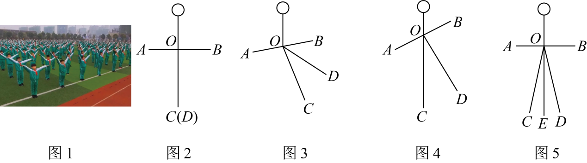
(1)如图2，A、O、B三点共线，点C、D重合，∠AOC=∠BOC，则∠AOC=______°；
(2)如图3，A、O、B三点共线，且∠AOC:∠BOC=3:2，DO平分∠BOC，求∠BOC，∠AOD的大小；
(3)第三节腿部运动中，如图4，洋洋发现，虽然A、O、B三点共线，却不在水平方向上，且∠AOD:∠BOC=3:2，他经过计算发现，∠AOC−23∠BOD的值为定值，请写出这个定值为______；
(4)第四节体侧运动中，如图5，乐乐发现，两腿左右等距张开，使竖直方向的射线OE平分∠COD，且∠COD=30°，开始运动前A、O、B三点在同一水平线上，OA、OB绕点O顺时针旋转，OA旋转速度为每秒50°，OB旋转速度为每秒25°，当OB旋转到与OD重合时运动停止（OE是竖直方向的一条射线）
①运动停止时，∠AOD= ；
②请帮助乐乐写出运动过程中∠AOC与∠BOE的数量关系
【答案】(1)90
(2)72°,144°
(3)60°
(4)①105°；②当0≤t≤2.1时，∠AOC+2∠BOE=255°；当2.1<t≤3时，∠AOC−2∠BOE=105°
【分析】本题考查了角的和差运算，一元一次方程的应用；
（1）由A，O，B三点共线，可得出∠AOC+∠BOD=180°，再由∠AOC=∠BOD，即可求出∠AOC=90°；
（2）由∠AOC:∠BOC=3:2，设∠AOC=3x°,∠BOC=2x°，根据A、O、B三点共线，则∠AOC+∠BOC=180°，得出x=36，再根据∠AOD=∠AOC+∠COD=4x，即可求解；
（3）由∠AOD:∠BOC=3:2，设∠AOD=3α，则∠BOC=2α，分别求出∠AOC=180°−∠BOC=180°−2α，∠BOD=180°−∠AOD=180°−3α，再代入∠AOC−23∠BOD即可求解；
（4）①算出运动停止时间，求出OA运动的角度，进而求出∠AOD度数；
②由OA的运动过程可知，需要分类讨论，在点C，O，A三点共线前和点C，O，A三点共线后，分别求解即可；
【详解】（1）∵A，O，B三点共线，
∴∠AOC+∠BOD=180°，
∵∠AOC=∠BOD，
∴∠AOC=12×180°=90°，
故答案为：90；
（2）解：∵∠AOC:∠BOC=3:2，
设∠AOC=3x°,∠BOC=2x°，
∵DO平分∠BOC，
∴∠BOD=∠COD=x°，
∵A、O、B三点共线，则∠AOC+∠BOC=180°，
∴3x+2x=180，
解得：x=36，
∴∠BOC=2x°=72°,∠AOD=∠AOC+∠COD=4x=144°
（3）这个定值是60°，理由，
∵∠AOD:∠BOC=3:2，
设∠AOD=3α，则∠BOC=2α，
∴∠AOC=180°−∠BOC=180°−2α，∠BOD=180°−∠AOD=180°−3α，
∴∠AOC−23∠BOD=180°−2α−23180°−3α=60°，
∴∠AOC−23∠BOD的值为定值，这个定值是60°；
（4）∵∠COD=30°，
∴∠COE=∠EOD=15°，∠BOD=∠AOC=75°，
设运动时间为ts，则t=75°÷25°=3，则0≤t≤3，
①运动停止时，即t=3时，OA旋转的角度为50°×3=150°，
∴∠AOD=180°−50°×3+75°=105°，
故答案为：105°；
②当点C，O，A三点共线时，t=180°−75°÷50°=2.1；
∴当0≤t≤2.1时，∠AOC=75°+50°t，∠BOE=90°−25°t，
∴∠AOC+2∠BOE=255°；
当2.1<t≤3时，∠AOC=180°−50°t−2.1=285°−50°t，∠BOE=90°−25°t，
∴∠AOC−2∠BOE=105°，
综上，当0≤t≤2.1时，∠AOC+2∠BOE=255°；当2.1<t≤3时，∠AOC−2∠BOE=105°．
【变式3-1】（24-25七年级上·四川成都·期末）已知∠AOB=90°．

(1)如图1，若射线ON，OM分别为∠AOC，∠BOC的角平分线，则∠MON= ．
(2)如图2，射线OC从OA出发绕点O以每秒20°的速度沿逆时针方向旋转，射线OD从OA出发绕点O以每秒10°的速度沿顺时针方向旋转，设运动时间为t，且OM平分∠BOC．
①当0<t<4.5时，若ON分∠AOC为1:3两个部分，求满足∠DON=12∠MON时，t的值．
②如图3，若OP平分∠AOD，当0<t<6且t≠4.5时，试判断2∠MOP−∠COD是否为定值．若是，请求出该定值；若不是，请说明理由．
【答案】(1)45°
(2)①95或911；②2∠MOP−∠COD=90°，为定值
【分析】本题考查了角的平分线的应用，解方程，角的和差计算，本题难度很大，熟练掌握定义和解方程，画出图形是解题的关键．
（1）根据角平分线定义和角的和差关系即可求得答案；
（2）①由题意得，∠AOC=20°t，∠AOD=10°t，∠BOC=90°−20°t，由OM平分∠BOC，ON分∠AOC为1:3两个部分，可得：∠AON=14∠AOC=5°t，∠CON=34∠AOC=15°t或∠AON=34∠AOC=15°t，∠CON=14∠AOC=5°t，分别根据∠DON=12∠MON，建立方程求解即可；
②分两种情况：当0<t<4.5时，当4.5<t<6时，利用角平分线定义及角的和差关系即可判断2∠MOP−∠COD为定值．
【详解】（1）解：如图1，∠AOB=90°，
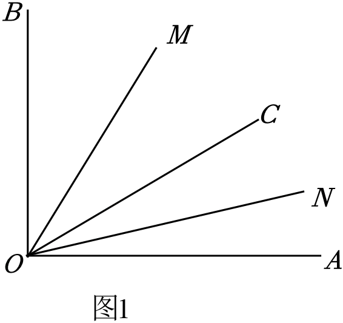
则∠AOC+∠BOC=90°，
∵射线ON，OM分别为∠AOC，∠BOC的角平分线，
∴∠CON=12∠AOC，∠MOC=12∠BOC，
∴∠MON=∠MOC+∠CON=12(∠AOC+∠BOC)=45°，
故答案为：45°．
（2）解：①如图2，
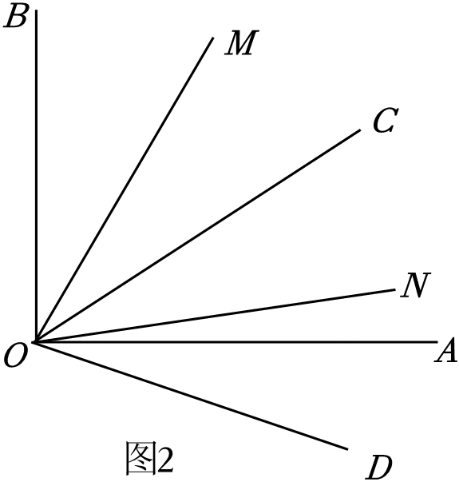
∵射线OC从OA出发绕点O以每秒20°的速度沿逆时针方向旋转，射线OD从OA出发绕点O以每秒10°的速度沿顺时针方向旋转，运动时间为t，
∴∠AOC=20°t，∠AOD=10°t，
∴∠BOC=90°−20°t，
∵OM平分∠BOC，ON分∠AOC为1:3两个部分，
∴∠COM=12∠BOC=45°−10°t，∠AON=14∠AOC=5°t，∠CON=34∠AOC=15°t或∠AON=34∠AOC=15°t，∠CON=14∠AOC=5°t，
当∠AON=14∠AOC=5°t，∠CON=34∠AOC=15°t时，
∴∠DON=∠AON+∠AOD=5°t+10°t=15°t，∠MON=∠COM+∠CON=45°−10°t+15°t=45°+5°t，
∵∠DON=12∠MON，
∴15°t=12(45°+5°t)，
解得：t=95；
当∠AON=34∠AOC=15°t，∠CON=14∠AOC=5°t时，
∴∠DON=∠AON+∠AOD=15°t+10°t=25°t，∠MON=∠COM+∠CON=45°−10°t+5°t=45°−5°t，
∵∠DON=12∠MON，
∴25°t=12(45°−5°t)，
解得：t=911；
综上所述，t的值为95或911．
②当0<t<4.5时，如图3，∠AOC=20°t，∠AOD=10°t，∠BOC=90°−20°t，
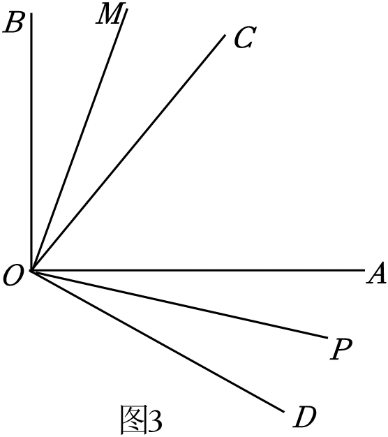
∵OM平分∠BOC，OP平分∠AOD，
∴∠MOC=12∠BOC=45°−10°t，∠AOP=12∠AOD=5°t，
∴∠MOP=∠MOC+∠AOC+∠AOP=45°−10°t+20°t+5°t=45°+15°t，
∠COD=∠AOC+∠AOD=20°t+10°t=30°t，
∴2∠MOP−∠COD=2(45°+15°t)−30°t=90°，为定值；
当4.5<t<6时，如图4，∠AOC=20°t，∠AOD=10°t，∠BOC=20°t−90°，

∵OM平分∠BOC，OP平分∠AOD，
∴∠MOB=12∠BOC=10°t−45°，∠AOP=12∠AOD=5°t，
∴∠MOP=∠MOB+∠AOB+∠AOP=10°t−45°+90°+5°t=45°+15°t，∠COD=∠AOC+∠AOD=20°t+10°t=30°t，
∴2∠MOP−∠COD=2(45°+15°t)−30°t=90°，为定值；
综上所述，2∠MOP−∠COD=90°，为定值．
【变式3-2】（24-25七年级上·四川成都·阶段练习）小七同学最近在研究平面中的角，他发现各角通过运动会产生很多新的结论，于是他用几何画板制作了一道关于角的动态问题，如图1，平面上顺时针排列射线OA,OB,OC,OD,∠BOC=90°，∠AOD在∠BOC外部且为钝角，∠AOB:∠COD=7:8，射线OM,ON分别平分∠AOC,∠AOD（题目中所出现的角均小于180°且大于0°）．请用学过的知识帮他求解以下问题．
(1)若∠AOD=120°，∠AOM= ，∠CON= ；
(2)7∠CON−∠AOM的值是否随着∠AOD的变化而变化？若不变，求出该定值；若要变，请说明理由；
(3)在（1）的条件下，将∠AOB绕点O以每秒2°的速度顺时针旋转得到∠A1OB1（OA,OB的对应边分别是OA1,OB1），若旋转时间为t秒（0<t<180），当∠A1OC+6°=∠B1OD时，求出t的值．
【答案】(1)80°；140°
(2)7∠CON−∠AOM的值不会随着∠AOD的变化而变化，定值为900°
(3)81或174
【分析】（1）先求出∠AOB+∠COD=150°，再由∠AOB:∠COD=7:8，可求出∠AOB=70°,∠COD=80°，再根据角平分线定义求出∠AOM,∠DON，从而可得出结论；
（2）设∠AOD=α，可得∠AOB+∠COD=270°−α，再由∠AOB:∠COD=7:8，可求出∠AOB=715270°−α,∠COD=815270°−α，再根据角平分线定义求出∠AOM,∠DON，从而可得出结论；
（3）分五种情况讨论求解即可．
【详解】（1）解：∵∠AOD=120°，∠BOC=90°，
∴∠AOB+∠COD=150°，
∵∠AOB:∠COD=7:8，
∴∠AOB=70°,∠COD=80°，
∴∠AOC=∠AOB+∠BOC=160°，
∵射线OM,ON分别平分∠AOC,∠AOD，
∴∠AOM=12∠AOC=80°,∠DON=12∠AOD=60°，
∴∠CON=∠DON+∠COD=140°；
故答案为：80°；140°；
（2）解：7∠CON−∠AOM的值不会随着∠AOD的变化而变化，
设∠AOD=α，
∵∠BOC=90°，
∴∠AOB+∠COD=270°−α，
∵∠AOB:∠COD=7:8，
∴∠AOB=715270°−α,∠COD=815270°−α，
∴∠AOC=∠AOB+∠BOC=715270°−α+90°=3240°−7α15，
∵射线OM,ON分别平分∠AOC,∠AOD，
∴∠AOM=12∠AOC=3240°−7α30,∠DON=12∠AOD=α2，
∴∠CON=∠DON+∠COD=α2+815270°−α=4320°−α30，
∴7∠CON−∠AOM=7×4320°−α30−3240°−7α30=900°，
即7∠CON−∠AOM的值不会随着∠AOD的变化而变化，定值为900°；
（3）解：由（1）得：∠AOC=90°+70°=160°,∠BOD=80°+90°=170°，
当∠A1OC=160°−2°t,∠B1OD=170°−2°t时，
∵∠A1OC+6°=∠B1OD，
∴160°−2°t+6°=170°−2°t，无解；
当∠A1OC=2°t−160°,∠B1OD=170°−2°t时，
∵∠A1OC+6°=∠B1OD，
∴2°t−160°+6°=170°−2°t，
解得：t=81；
当∠A1OC=2°t−160°,∠B1OD=2°t−170°时，
∵∠A1OC+6°=∠B1OD，
∴2°t−160°+6°=2°t−170°，无解；
当∠A1OC=360°−2°t−160°=520°−2°t,∠B1OD=2°t−170°时，
∵∠A1OC+6°=∠B1OD，
∴520°−2°t+6°=2°t−170°，
解得：t=174；
当∠A1OC=360°−2°t−160°=520°−2°t,∠B1OD=360°−2°t−170°=530°−2°t时，
∵∠A1OC+6°=∠B1OD，
∴520°−2°t+6°=530°−2°t，无解；
综上所述，t的值为81或174．
【点睛】本题考查角平分线的定义、角的和差以及一元一次方程在几何方面的运用，是学习方程之后接触平面几何中一道典型的数型结合题，有利于对数学学科本质的认识．在计算时易出错不会用一个式子代入表示另一个式子，隐含了数学消元思想，熟练掌握各知识点是解题的关键．
【变式3-3】如图，把一副三角尺拼在一起，其中三角形ABC是等腰直角三角形，∠BCA=90°，并且B，C，E三点在同一直线上．

(1)如图1，求∠BAD的度数；
(2)如图2，若射线CB′，CA′分别从CB，CA位置开始，同时绕点C以每秒5°的速度顺时针匀速旋转180°，CF平分∠A′CB0°<∠A′CB<180°，CG平分∠B′CE0°<∠B′CE<180°，设旋转的时间为t秒．
①当0<t<18时，∠FCG的度数是否等于一个定值？若是，请求出这个定值；若不是，请说明理由；
②当t为何值时，∠B′CF=2∠GCA′？
【答案】(1)135°；
(2)①是，45°；②6秒或30秒．
【分析】本题考查了结合图形中角度的计算，角平分线的定义，一元一次方程的应用；
（1）根据三角形ABC是等腰直角三角形，∠BCA=90°，得出∠BAC=45°，进而即可求解；
（2）①当0<t<18时，∠BCA′=90°+α，∠B′CE=180°−α．根据角平分线的定义可得∠BCF=12∠BCA′=45°+12α，∠B′CG=∠GCE=12∠B′CE=90°−12α，进而求得∠BCG=∠BCB′+∠B′CG=90°+12α，根据∠FCG=∠BCG−∠BCF即可求解；
②当0<t<18时，由①可得，∠B′CF=45°−12α.，∠A′CE=90°−α．分别求得∠B′CF,∠GCA′，根据∠B′CF=2∠GCA′建立方程，当18≤t<36时，同理可得∠B′CF,∠GCA′，根据∠B′CF=2∠GCA′建立方程，解方程即可求解．
【详解】（1）解：∵三角形ABC是等腰直角三角形，∠BCA=90°，
∴∠BAC=45°．∴∠BAD=180°−∠BAC=135°．
（2）①∠FCG的度数是等于一个定值为45°，理由如下．
∵CB′，CA′旋转速度相同，
∴设∠BCB′=∠DCA′=α，
当0<t<18时，则∠BCA′=90°+α，∠B′CE=180°−α．
∵CF平分∠A′CB，∴∠BCF=12∠BCA′=45°+12α．
∵CG平分∠B′CE，∴∠B′CG=∠GCE=12∠B′CE=90°−12α．
∴∠BCG=∠BCB′+∠B′CG=α+90°−12α=90°+12α．
∴∠FCG=∠BCG−∠BCF=90°+12α−45°+12α=45°．
②当0<t<18时，由①可得，
∠B′CF=45°−12α.，∠A′CE=90°−α．
∴∠GCA′=∠GCE−∠A′CE=9°−12α−90°−α=12α．
当∠B′CF=2∠GCA′时，则45°−12α=2×12α，
解得α=30°．
∴t=30÷5=6秒．
当18≤t<36时，
∵CB′，CA′旋转速度相同，
∴设∠BCB′=∠DCA′=α，
∴∠ECA′=α−90°，∠BCA′=270°−α，∠B′CE=180°−α．
∵CF平分∠A′CB，
∴∠BCF=∠A′CF=12∠BCA′=135°−12α．
∵CG平分∠B′CE，
∴∠B′CG=∠GCE=12∠B′CE=90°−12α．
∴∠B′CF=∠B′CE+∠ECA′+∠A′CF=225°−12α．
∴∠GCA′=∠GCE+∠ECA′=12α．
当∠B′CF=2∠GCA′时，则225°−12α=2×12α，
解得α=150°．
∴t=150÷5=30．
综上，t=6秒或30秒时，∠B′CF=2∠GCA′．
【题型4 几何图形中动角数量关系问题】
【例4】将一副直角三角板按如图1摆放在直线AD上（直角三角板OBC和直角三角板MON，∠OBC=90°，∠BOC=45°，∠MON=90°，∠MNO=30°），保持三角板OBC不动，将三角板MON绕点O以每秒6°的速度顺时针方向旋转t秒．

(1)如图2，当t= 秒时，OM平分∠AOC，此时∠NOC−∠AOM= ；
(2)继续旋转三角板MON，如图3，使得OM、ON同时在直线OC的右侧，猜想∠NOC与∠AOM有怎样的数量关系？并说明理由（数量关系中不能含t）；
(3)直线AD的位置不变，若在三角板MON开始顺时针旋转的同时，另一个三角板OBC也绕点O以每秒2°的速度顺时针旋转，当OM旋转至射线OD上时，两个三角板同时停止运动．
①当t= 秒时，∠MOC=15°；
②请直接写出在旋转过程中，∠NOC与∠AOM的数量关系（数量关系中不能含t）．
【答案】(1)t=3.75；∠NOC−∠AOM=45°
(2)∠NOC−∠AOM=45°
(3)①t=7.5或15；②3∠NOC−2∠AOM=135°
【分析】本题考查了角的计算，解题的关键是理解题意并找到各个量之间的关系求出角的度数，
（1）根据角平分线的定义得到∠AOM=12∠AOC=22.5°，于是得到t=3.75，由于∠MON=90°，∠MOC=22.5°，即可得到∠NOC−∠AOM=45°，
（2）根据题意得∠AON=90°+6t，求得∠NOC=45°+6t，即可得到结论；
（3）①根据题意得∠AOB=2t，∠AOM=6t，求得∠AOC=45°+2t，列方程即可得到结论；②根据角的和差即可得到结论．
【详解】（1）解：∵∠AOC=45°，OM平分∠AOC，
∴∠AOM=12∠AOC=22.5°，
∴t=22.5÷6=3.75，
∵∠MON=90°，∠MOC=22.5°，
∴∠NOC−∠AOM=∠MON−∠MOC−∠AOM=45°；
（2）解：∠NOC−∠AOM=45°，
∵∠AON=90°+6t，
∴∠NOC=90°+6t−45°=45°+6t，
∵∠AOM=6t，
∴∠NOC−∠AOM=45°，
（3）解：①∵∠AOB=2t，∠AOM=6t，
∴∠AOC=45°+2t
∴45°+2t−6t=15°或6t−45°−2t=15°，
解得：t=7.5或15，
②13∠NOC−14∠AOM=15°
∵∠AOB=2t，∠AOM=6t，∠MON=90°，∠BOC=45°，
∠AON=90°+∠AOM=90°+6t，∠AOC=∠AOB+∠BOC=45°+2t，
∴∠NOC=∠AON−∠AOC=90°+6t−45°−2t=45°+4t，
∴∠NOC=45°+4×∠AOM6，
∴3∠NOC−2∠AOM=135°．
【变式4-1】（24-25七年级上·浙江杭州·阶段练习）已知O是直线AB上的一点，∠COD是直角，OE平分∠BOC．
【猜想】
如图1，当∠COD的两边在直线AB同侧时，小明通过实验测量得到∠AOC与∠DOE的相关数量，如下表：求∠DOE与∠AOC的数量关系．
【探究】
小明将图1中的∠DOC绕顶点O顺时针旋转至图2的位置．探究∠AOC和∠DOE的数量关系是否符合【猜想】中的结论，并说明理由．
【拓展】
将图1中∠COD的边OC与OA重合的位置开始，绕顶点O顺时针旋转，旋转的速度为每秒9度，旋转时间t秒(0<t<20)，OF为∠COD的角平分线，当∠EOF=30°时，求t的值．
∠AOC | 90° | 60° | 50° | 30° |
∠DOE | 45° | 30° | 25° | 15° |

【答案】【猜想】∠DOE=12∠AOC；【探究】∠DOE=12∠AOC；【拓展】103或503
【分析】猜想：由角平分线的定义结合角的和差运算可得∠DOE=90°−∠COE=90°−90°−12∠AOC=12∠AOC，从而可得结论；
探究：结合角的和差运算可得∠DOE=90°−∠COE=90°−90°−12∠AOC=12∠AOC，从而可得结论；
拓展：先得出∠AOC=9t，则∠BOC=180°−9t，再分两种情况讨论当0<t≤10时和10<t<20时，再建立方程求解即可．
【详解】解：猜想：∠DOE=12∠AOC；
∵OE平分∠BOC，
∴∠COE=∠BOE=12∠BOC=12180°−∠AOC=90°−12∠AOC，
∵∠COD是直角，
∴∠DOE=90°−∠COE=90°−90°−12∠AOC=12∠AOC；
探究：符合，理由如下：
∵OE平分∠BOC，
∴∠COE=∠BOE=12∠BOC=12180°−∠AOC=90°−12∠AOC，
∵∠COD是直角，
∴∠DOE=90°−∠COE=90°−90°−12∠AOC=12∠AOC；
拓展：①当0<t≤10时，∠AOC=9t，则∠BOC=180°−9t，
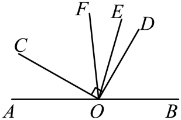
∵OF为∠COD的角平分线，∠COD=90°，
∴∠COF=12∠COD=45°，
∵OE平分∠BOC，
∴∠COE=12∠BOC=12180°−9t=90°−4.5t，
∴∠FOE=90°−4.5t−45°=30°，
∴t=103，
②当10<t<20时，∠AOC=9t，则∠BOC=180°−9t，
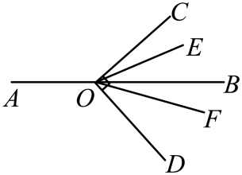
∵OF为∠COD的角平分线，∠COD=90°，
∴∠COF=12∠COD=45°，
∵OE平分∠BOC，
∴∠COE=12∠BOC=12180°−9t=90°−4.5t，
∴∠FOE=45°−90°−4.5t=30°，
∴t=503，
综上所述，t的值为103或503．
【点睛】本题考查的是角平分线的定义，角的和差运算，余补角的定义，一元一次方程的应用，熟练的利用方程解决问题是解本题的关键．
【变式4-2】（24-25七年级上·湖南常德·期末）如图，已知∠AOB=120°．
(1)OC，OD是以O为顶点的两条射线，OM，ON分别平分∠AOC，∠BOD．
①如图1，当∠COD=50°，∠BOD=40°时，∠MON的度数为_______；
②如图2，当0<∠BOD<60°时，请写出∠AOD、∠BOC与∠MON之间的数量关系，并说明理由；
(2)如图3，当∠COD=50°时，∠AOC以4.5度/秒的速度整体绕点O顺时针旋转，同时，∠BOD也以2度/秒的速度整体绕点O顺时针旋转，当∠BOD刚好旋转一周时，两个角都停止旋转，求旋转过程中∠AOC与∠BOD有重叠部分的总时长．
【答案】(1)①85°；②2∠MON=∠AOD+∠BOC
(2)44秒
【分析】本题考查了角度的和差计算，角平分线的定义；
（1）①根据题意得出∠AOC=30°，进而根据角平分线的定义可得∠COM=12∠AOC=15°，∠DON=12∠DOB=20°，进而根据∠MON=∠COM+∠COD+∠DON，即可求解；
②根据角平分线的定义可得∠COM=12∠AOC，∠BON=12∠DOB，进而根据∠MON=∠MOC+∠BOC+∠BON =12∠AOD+12∠BOC，即可求解；
（2）根据题意得出第180秒时，两个角都停止旋转，然后根据追及问题分析两角开始重合到分离的过程，转化为射线的旋转，分析∠AOC与∠BOD有重叠部分的时间，即可求解．
【详解】（1）解：①∵∠COD=50°，∠BOD=40°
∴∠BOC=∠COD+∠BOD=90°
∵∠AOB=120°
∴∠AOC=∠AOB−∠BOC=120°−90°=30°，
∵OM，ON分别平分∠AOC，∠BOD．
∴∠COM=12∠AOC=15°，∠DON=12∠DOB=20°
∴∠MON=∠COM+∠COD+∠DON=15°+50°+20°=85°
故答案为：85°．
②∵OM，ON分别平分∠AOC，∠BOD．
∴∠COM=12∠AOC，∠BON=12∠DOB
∴∠MON=∠MOC+∠BOC+∠BON
=12∠AOC+∠BOD+∠BOC+12∠BOC
=12∠AOD+12∠BOC
∴2∠MON=∠AOD+∠BOC
（2）解：∵∠BOD以2度/秒的速度整体绕点O顺时针旋转，当∠BOD刚好旋转一周时，
∴所用时间为3602=180秒，
∴第180秒时，两个角都停止旋转，
∵∠AOC以4.5度/秒的速度整体绕点O顺时针旋转，
∴旋转过程中∠AOC，∠BOD同向旋转，且∠AOC的速度大于∠BOD的速度，
当第一次∠AOC追上∠BOD时，
射线OC与射线OD重合时，所用时间为：50÷4.5−2=20秒，即第20秒时，两角开始有重叠部分
射线OA与射线OB重合时，所用时间为：120÷4.5−2=48秒，即第48秒后，两角没有重叠部分；
∴∠AOC与∠BOD有重叠部分的时间为：48−20=28秒
当第二次∠AOC追上∠BOD时，则射线OC旋转了360°−∠AOC+∠BOD=360°−120°−50°=290°
射线OC第二次与射线OD重合时，从开始起所用时间为：48+290÷4.5−2=164秒
同理射线OA第二次与射线OB重合时，∠AOC与∠BOD有重叠部分的时间为28秒，即164+28=192秒
又∵总用时间为180秒，
∴第二次重叠时间为180−164=16秒
∴旋转过程中∠AOC与∠BOD有重叠部分的总时长为28+16=44秒．
【变式4-3】如图，直线AB与直线CD相交于点O，∠AOC=60°． 已知∠MON=60°，∠MON绕点O在平面内旋转，旋转前，边OM与射线OB重合，边ON与射线OD重合． 将∠MON绕点O按每秒12°的速度沿顺时针方向旋转一周．
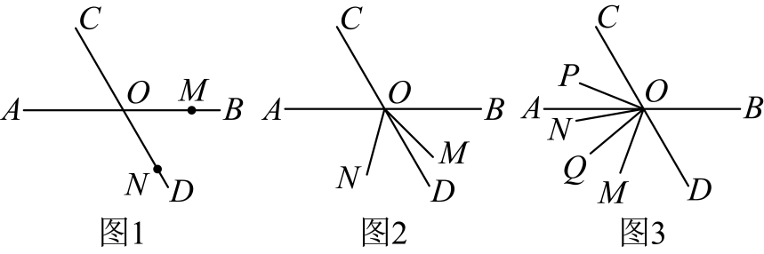
(1)如图1，从∠MON旋转开始至ON边与射线OC重合时，共需多少秒？
(2)∠MON旋转至如图2所示位置时，试说明∠CON与∠AOM有何数量关系，并说明理由；
(3)如图3，已知∠POQ=60°，∠POQ绕点O在平面内旋转，旋转前，边OP与射线OC重合，边OQ与射线OA重合． 若在∠MON旋转过程中，∠POQ绕点O以每秒3°的速度绕点O沿逆时针方向旋转，当∠MON停止旋转时，∠POQ也停止旋转，旋转过程中，当边ON所在直线恰好平分锐角∠POQ时，求出旋转时间．
【答案】(1)15
(2)∠CON与∠AOM的数量关系是：∠CON=∠AOM(相等)，理由见解析
(3)t=10或22
【分析】本题考查与角平分线有关的角度计算问题，一元一次方程方程的应用等知识，能正确找到符合条件的情况并正确作图是解题的关键．
（1）先推导找出旋转的角度为180°，再除以旋转速度得解；
（2）利用∠AOC=∠MON=60°得到∠AOC+∠AON=∠MON+∠AON，从而得解；
（3）设时间为t秒，分ON平分∠POQ和ON的反向延长线ON′平分∠POQ两种情况讨论分别列出方程求解即可．
【详解】（1）解：∵∠COD=180°，
∴从∠MON旋转开始至ON边与射线OC重合时，共旋转了180°，
∴所需时间是：180°÷12=15(秒)，
答：∠MON旋转开始至ON边与射线OC重合时，共需15秒．
（2）∠CON与∠AOM的数量关系是：∠CON=∠AOM(相等)，理由如下：
∵∠AOC=∠MON=60°，
∴∠AOC+∠AON=∠MON+∠AON，即∠CON=∠AOM；
（3）设时间为t秒，
∵将∠MON绕点O按每秒12°的速度沿顺时针方向旋转一周．
∴当0<t≤15时，∠BOM=12t°，当15<t≤30时，∠BOM=360°−12t°．
又∵∠POQ绕点O以每秒3°的速度绕点O沿逆时针方向旋转，
∴∠COP=3t°，
①如图，当ON平分∠POQ时，0<t≤15，∠BOM=12t°，
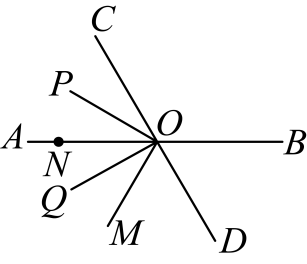
∵ON平分∠POQ，∠POQ=60°，
∴∠PON=∠NOQ=12∠POQ=30°，
∴∠QOM=∠MON−∠NOQ=30°，
又∵∠BOM=12t°，∠COP=3t°， ∠AOC=60°，
∴∠COP+∠POQ+∠QOM+∠BOM=3t°+60°+30°+12t°=180°+∠AOC=240°，
解得：t=10；
②如图，当ON的反向延长线ON′平分∠POQ时，15<t≤30，∠BOM=360°−12t°，
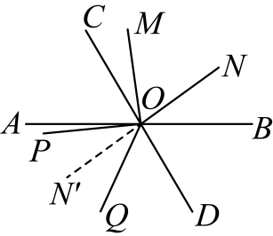
∵ON的反向延长线ON′平分∠POQ，∠POQ=60°，
∴∠PON′=∠N′OQ=12∠POQ=30°，
又∵∠COP=3t°，
∴∠CON′=∠COP+∠PON′=3t°+30°，
又∵∠BOM=360°−12t°，∠MON=60°，
∴∠BON=∠BOM−∠MON=360°−12t°−60°=300°−12t°，
∴∠CON=180°−∠AOC−∠BON=180°−60°−300°−12t°=12t°−180°，
又∵∠CON+∠CON′=180°，即3t°+30°+12t°−180°=180°，
∴解得：t=22；
综上所述：t=10或22．
【题型5 几何图形中动角求运动时间问题】
【例5】如图1，点O是直线AB上一点，将一个直角三角形板∠MON=90°如图1放置，使其中一条直角边ON在直线AB上，射线OC在∠BOM内部．
(1)如图2，将三角板绕点O逆时针旋转，当∠BON=∠CON时，请判断OM是否平分∠AOC，并说明理由；
(2)若∠BOC=40°，将三角板绕点O逆时针旋转，每秒旋转1°．
①多少秒时∠AOM=∠COM？
②如图3，当ON在∠AOC内部，另一边OM在直线AB的另一侧，请探索∠AOM与∠CON的数量关系，并说明理由．
【答案】(1)OM平分∠AOC，理由见解析
(2)①20秒或200秒，②∠CON−∠AOM=50°
【分析】本题考查的是角的和差运算，角平分线的定义．
（1）由∠AOM+∠BON=90°,∠COM+∠CON=90°，结合∠BON=∠CON，从而可得答案．
（2）①当OM、OC在直线AB的同侧时，证明∠BON=∠CON，可得∠BON=20°，进一步可得答案，当OM、OC在直线AB的两侧时，如图，求解∠AOM=∠COM=1240°+180°=110°，可得∠AON=∠AOM−∠MON=110°−90°=20°，进一步可得答案．②求解∠AOC=180°−40°=140°，即∠AON+∠CON=140°，∠AOM+∠AON=90°，进一步可得结论．
【详解】（1）解：OM平分∠AOC，理由如下：
∵∠MON=90°，
∴∠AOM+∠BON=90°,∠COM+∠CON=90°，
∵∠BON=∠CON，
∴∠AOM=∠COM，
∴OM平分∠AOC．
（2）解：有两种情况：①当OM、OC在直线AB的同侧时，
∵∠MON=90°，
∴∠AOM+∠BON=90°,∠COM+∠CON=90°，
若∠AOM=∠COM，则∠BON=∠CON，
∵∠BOC=40°，
∴∠BON=20°，
∵每秒旋转1°，
∴20秒时∠AOM=∠COM；
当OM、OC在直线AB的两侧时，如图，
∵∠BOC=40°，
若∠AOM=∠COM，
则∠AOM=∠COM=1240°+180°=110°，
∴∠AON=∠AOM−∠MON=110°−90°=20°，
∴旋转角=180°+20°=200°，
∵每秒旋转1°，
∴200秒时∠AOM=∠COM，
综上，20秒或200秒时∠AOM=∠COM．
②∵∠BOC=40°，
∴∠AOC=180°−40°=140°，
即∠AON+∠CON=140°，
∵∠AOM+∠AON=90°，
∴∠CON−∠AOM=50°．
【变式5-1】已知：如图1，点A、O、B依次在直线MN上，现将射线OA绕点O沿顺时针方向以每秒2°的速度旋转，同时射线OB绕点O沿逆时针方向以每秒4°的速度旋转，如图2，设旋转时间为t秒(0≤t≤90)．

(1)用含t的代数式表示∠MOA，其结果是：∠MOA=______(度)．
(2)在运动过程中，当∠AOB=60°时，求t的值．
(3)在旋转过程中是否存在这样的t，使得射线OB是由射线OM、射线OA所组成的角(指大于0°而不超过180°的角)的平分线？如果存在，请计算出的值；如果不存在，请说明理由．
【答案】(1)2t
(2)20或40或80
(3)存在，t的值为36或60
【分析】本题考查角的和差关系，一元一次方程的应用，注意分情况讨论是解题的关键．
（1）∠MOA的度数等于OA旋转速度乘以旋转时间；
（2）当∠AOB=60°时，分三种情况：射线OA在OB左侧；射线OA在OB右侧；射线OB在MN下方，根据角的和差关系列一元一次方程，即可求解；
（3）分两种情况：射线OB在MN上方，射线OB在MN下方，根据角的和差关系列一元一次方程，即可求解．
【详解】（1）解：由题意可得：
∠MOA=2t度，
故答案为：2t；
（2）解：当∠AOB=60°时，分三种情况：
当射线OA在OB左侧时，如图：
∠MOA=2t°，∠BON=4t°，
∠MOA+∠BON+∠AOB=180°，
即2t°+4t°+60°=180°，
解得：t=20；
当射线OA在OB右侧时，如图：
∠MOA+∠BON=180°+∠AOB，
即2t°+4t°=180°+60°，
解得：t=40；
当射线OB在MN下方时，如图：
180°−2t°+360°−4t°=60°，
解得：t=80；
综上可知，t的值为20或40或80．
（3）解：由题意得OB平分∠MOA，
所以12∠MOA=∠BOM，
当射线OB在MN上方时，12⋅2t°=180°−4t°，
解得t=36；
当射线OB在MN下方时，12⋅2t°=4t°−180°
解得t=60，
综上可知，存在，t的值为36或60．
【变式5-2】定义：从一个角的顶点出发，在角的内部引两条射线，如果原角是这两条射线所成的角的n倍，那么原角叫做这两条射线所成的角的n倍角．如图1，若∠AOB=2∠COD，则∠AOB是∠COD的两倍角．
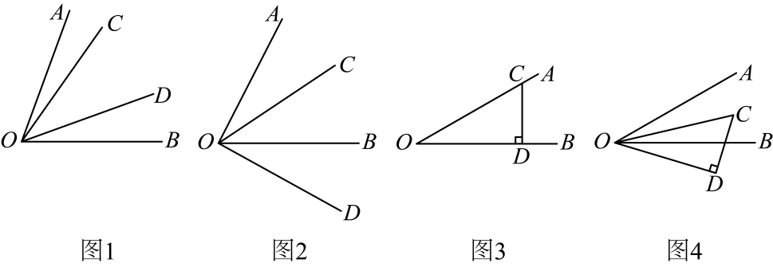
(1)如图1：已知∠AOB=70°，∠AOC=25°，∠AOB是∠COD的两倍角，则∠BOD=___________；
(2)如图2：已知∠AOB=75°，将∠AOB绕点O按顺时针方向旋转一个角度α0<α<75°至∠COD，当旋转的角度α为何值时，∠AOD是∠COB的三倍角．
(3)已知∠AOB=30°，把一块含有30°角的三角板如图3叠放，将三角板绕顶点O以2度/秒的速度按顺时针方向旋转（如图4）．问：在旋转一周的过程中，射线OA，OB，OC，OD能否构成三倍角？若能，请求出旋转的时间：若不能，请说明理由．
【答案】(1)10°
(2)α=37.5°
(3)能，7.5秒或30秒或150秒或172.5秒
【分析】本题考查了角度计算、一元一次方程的应用，理解n倍角的定义，运用分类讨论思想是解题的关键．
（1）根据两倍角的定义得到∠COD=12∠AOB=35°，再利用角的和差即可求解；
（2）由题意得∠AOC=∠BOD=α，利用角的和差得到∠AOD=∠AOB+∠BOD=75°+α，∠COB=∠AOB−∠AOC=75°−α，再根据三倍角的定义列出方程，求出α的值即可解答；
（3）设旋转的时间为t秒，则三角板旋转的角度为2t度，根据题意分4种情况讨论：①射线OC在∠AOB内部，射线OD在∠AOB外部，且∠AOD是∠BOC的三倍角；②射线OC、OD都在∠AOB外部，且∠AOD是∠BOC的三倍角；③射线OC、OD都在∠AOB外部，且∠BOC是∠AOD的三倍角；④射线OD在∠AOB内部，射线OC在∠AOB外部，且∠BOC是∠AOD的三倍角，画出示意图，根据三倍角的定义列出方程，求出t的值即可解答．
【详解】（1）解：∵∠AOB是∠COD的两倍角，
∴∠AOB=2∠COD，
∴∠COD=12∠AOB=12×70°=35°，
∴∠BOD=∠AOB−∠AOC−∠COD=70°−25°−35°=10°；
故答案为：10°；
（2）解：由题意得，∠AOC=∠BOD=α，
∴∠AOD=∠AOB+∠BOD=75°+α，∠COB=∠AOB−∠AOC=75°−α，
∵∠AOD是∠COB的三倍角，
∴∠AOD=3∠COB，
∴75°+α=375°−α，
解得α=37.5°，
∴当旋转的角度α=37.5°时，∠AOD是∠COB的三倍角；
（3）解：设旋转的时间为t秒，则三角板旋转的角度为2t度，
①当射线OC在∠AOB内部，射线OD在∠AOB外部，且∠AOD是∠BOC的三倍角时，

则∠AOD=3∠BOC，
∴30+2t=330−2t，
解得t=7.5；
②当射线OC、OD都在∠AOB外部，且∠AOD是∠BOC的三倍角时，
则∠AOD=3∠BOC，
∴2t+30=32t−30，
解得t=30；
③当射线OC、OD都在∠AOB外部，且∠BOC是∠AOD的三倍角时，

则∠BOC=3∠AOD，
∴360−2t+30=3360−2t−30，
解得t=150；
④当射线OD在∠AOB内部，射线OC在∠AOB外部，且∠BOC是∠AOD的三倍角时，
则∠BOC=3∠AOD，
∴360−2t+30=330−360−2t，
解得t=172.5；
∴综上所述，射线OA，OB，OC，OD能构成三倍角，旋转的时间为7.5秒或30秒或150秒或172.5秒．
【变式5-3】（24-25七年级上·陕西西安·阶段练习）已知∠AOB=150°，OD为∠AOB内部的一条射线．

(1)如图（1），若∠BOC=60°，OD为∠AOB内部的一条射线，∠COD=13∠BOC，OE平分∠AOB，求∠DOE的度数．
(2)如图（2），若OC、OD是∠AOB内部的两条射线，OM、ON分别平分∠AOD，∠BOC，且∠MOC≠∠NOD，求∠AOC−∠BOD∠MOC−∠NOD的值．
(3)如图（3），C1为射线OB的反向延长线上一点，将射线OB绕点O顺时针以6°/s的速度旋转，旋转后OB对应射线为OB1，旋转时间为t秒（0<t≤35），OE平分∠AOB1，OF为∠C1OB1的三等分线，∠C1OF=13∠C1OB1，若∠C1OF−∠AOE=30°，求t的值．
【答案】(1)5°或35°
(2)2
(3)3或15
【分析】（1）先根据当OD在∠BOC内部时，当OD在∠AOC内部时，求出∠BOD的度数，再根据角平分线的定义求出∠BOE，然后根据角的和差即可得；
（2）设∠AOD=2x,∠BOC=2y，先根据角平分线的定义得出∠AOM=∠MOD=x,∠BON=∠NOC=y，再根据角的和差化简所求式子的分子分母即可得；
（3）先依题意，找到两个临界位置：OB1在AO的反向延长线上；OB1与OC1重合；然后根据角平分线的定义、角的和差倍分求解即可得．
【详解】（1）解：如图1，当OD在∠BOC内部时，
∵∠COD=13∠BOC,∠BOC=60°，
∴∠BOD=23∠BOC=23×60°=40°，
∵OE平分∠AOB，∠AOB=150°，
∴∠BOE=12∠AOB=12×150°=75°，
∴∠DOE=∠BOE−∠BOD=75°−40°=35°；
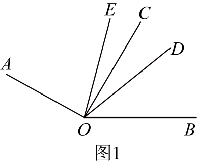
当OD在∠AOC内部时，
∵∠BOC=60°，∠COD=13∠BOC=20°，
∴∠BOD=∠BOC+∠COD=80°，
∵OE平分∠AOB，∠AOB=150°，
∴∠BOE=12∠AOB=12×150°=75°，
∴∠DOE=∠BOD−∠BOE=80°−75°=5°；
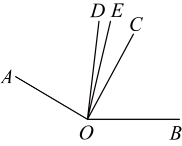
综上，∠DOE的度数为5°或35°；
（2）解：设∠AOD=2x,∠BOC=2y，
则∠AOM=∠MOD=x,∠BON=∠NOC=y，
∴∠AOC−∠BOD∠MOC−∠NOD=(∠AOD−∠COD)−(∠BOC−∠COD)(∠MOD−∠COD)−(∠NOC−∠COD)，
=∠AOD−∠BOC∠MOD−∠NOC，
=2x−2yx−y，
=2(x−y)x−y，
=2，
故∠AOC−∠BOD∠MOC−∠NOD的值为2；
（3）解：∵0<t≤35,∠AOB=150°，旋转速度为6°/s，
∴射线OB旋转到OA即停止转动，
由题意得，∠BOB1=6°t，
∵OE平分∠AOB1，
∴∠AOE=12∠AOB1，
因0°<∠AOB1<180°,0°<∠C1OB1<180°，
则有两个临界位置：OB1在AO的反向延长线上，此时t=180°−150°6°=5(s)；
OB1与OC1重合，此时t=180°6°=30(s)，
因此，分以下三种情况分析：
如图3−1，当0<t≤5时，
则∠AOE=12∠AOB1=12(∠AOB+∠BOB1)=12(150°+6°t)=75°+3°t∠C1OF=13∠C1OB1=13(180°−∠BOB1)=13(180°−6°t)=60°−2°t，
∴∠C1OF−∠AOE=60°−2°t−(75°+3°t)=15°+5°t=30°，
解得t=3(s)，符合题设，
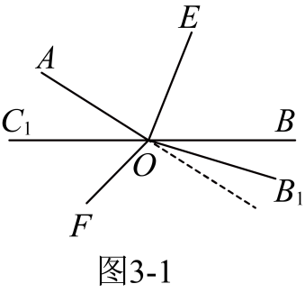
②如图3−2，当5<t≤30时，
则∠AOE=12∠AOB1=12(360°−∠AOB−∠BOB1)=12(360°−150°−6°t)=105°−3°t∠C1OF=13∠C1OB1=13(180°−∠BOB1)=13(180°−6°t)=60°−2°t，
∴∠C1OF−∠AOE=60°−2°t−(105°−3°t)=45°−1°t=30°，
解得t=15(s)，符合题设，
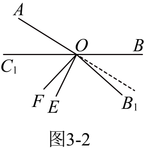
③如图3−3，当30<t≤35时，
则∠AOE=12∠AOB1=12(360°−∠AOB−∠BOB1)=12(360°−150°−6°t)=105°−3°t∠C1OF=13∠C1OB1=13(6°t−180°)=2°t−60°，
∴∠C1OF−∠AOE=2°t−60°−(105°−3°t)=5°t−165°=30°，
解得t=39(s)或27(s)，均不符题设，舍去，
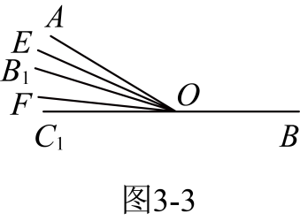
综上，t的值为3或15．
【点睛】本题考查了角平分线的定义、角的和差倍分，一元一次方程的应用，较难的是题（3），依据题意，找出两个临界位置，从而分三种情况讨论构造方程是解题关键．
【题型6 几何图形中动角求角度问题】
【例6】（24-25七年级上·天津·期末）已知∠AOB=90°，∠COD=60°，按如图1所示摆放，将OA、OC边重合在直线MN上，OB、OD边在直线MN的两侧：

(1)如图1，作射线OE平分∠AOB，射线OF平分∠COD，补全图形，并求出∠EOF的度数．
(2)保持∠AOB不动，将∠COD绕点O旋转至如图2所示的位置，则
①∠AOC+∠BOD=___________°（度）（直接写答案）
②∠BOC−∠AOD=___________°（度）（直接写答案）
(3)若∠COD按每分钟5°的速度绕点O逆时针方向旋转，∠AOB按每分钟2°的速度也绕点O逆时针方向旋转，OC旋转到射线ON上时都停止运动，设旋转t分钟，计算∠MOC−∠AOD．请画出图形并直接写出对应的结果（用含t的代数式表示）．
【答案】(1)补图见解析，∠EOF=75°
(2)150；30
(3)∠MOC−∠AOD=8t°−60°或∠MOC−∠AOD=2t°+60°
【分析】（1）补全图形，根据角平分线定义与角的和计算；
（2）①将∠AOC+∠BOD拆分、转化为∠AOB+∠COD即可得；②依据∠BOC+∠AOC=∠AOB、∠AOD+∠AOC=∠COD，将原式拆分、转化为∠AOB−∠COD计算可得；
（3）设运动时间为t分钟，∠MOC=5t°，∠MOA=2t°，∠COD=60°，分0≤t≤12、12<t≤20和20<t≤36表示出∠AOD即可得出答案；
【详解】（1）解：如图，作出∠AOB的平分线OE，∠COD的平分线OF，
∵∠AOB=90°，∠COD=60°，
且OE平分∠AOB，OF平分∠COD，
∴∠AOE=12∠AOB=45°，∠COF=12∠COD=30°，
∵OA、OC边重合在直线MN上，
∴∠EOF=∠AOE+∠COF=75°；
（2）解：∠AOC+∠BOD
=∠AOC+∠BOC+∠COD
=∠AOB+∠COD
=150°；
∠BOC−∠AOD
=∠BOC+∠AOC−∠AOD+∠AOC
=∠AOB−∠COD
=30°．
故答案为：150；30．
（3）解：∵∠COD按每分钟5°的速度绕点O逆时针方向旋转，
∠AOB按每分钟2°的速度也绕点O逆时针方向旋转，
旋转t分钟，
∴∠MOC=5t°，∠MOA=2t°，
∵∠COD=60°，
∴当0≤t≤12时，
∠MOD=∠COD−∠COM=60°−5t°，
∴∠AOD=∠AOM+∠DOM=60°−3t°，
∴∠MOC−∠AOD=8t°−60°；
当12<t≤20时，
∠DOM=∠COM−∠COD=5t°−60°，
∴∠AOD=∠AOM−∠DOM=60°−3t°，
∴∠MOC−∠AOD=8t°−60°；
当20<t≤36时，
∠DOM=∠COM−∠COD=5t°−60°，
∴∠AOD=∠DOM−∠AOM=3t°−60°，
∴∠MOC−∠AOD=2t°+60°；
综上，∠MOC−∠AOD=8t°−60°或∠MOC−∠AOD=2t°+60°．
【变式6-1】已知，OC是过点O的一条射线，OD，OE分别平分∠AOC，∠BOC．

(1)如图①，如果射线OC在∠AOB的内部，∠AOB=80°，则∠DOE= °；
(2)如图②，如果射线OC在∠AOB的内部绕点O旋转，∠AOB=x°，则∠DOE= °；
(3)如果射线OC在∠AOB的外部绕点O旋转，∠AOB=x°，请借助图③探究∠DOE的度数．
【答案】(1)40
(2)x2
(3)∠DOE的度数为x2°或360−x2°
【分析】此题考查角平分线的定义，关键是根据角平分线的定义解答．
（1）根据角平分线的定义解答即可；
（2）根据角平分线的定义解答即可；
（3）分两种情况，利用角平分线的定义解答即可．
【详解】（1）解：∵OD、OE分别平分∠AOC、∠BOC，
∴∠COD=∠AOD=12∠AOC，∠COE=∠BOE=12∠BOC，
∴∠DOE=∠COD+∠COE=12∠AOC+12∠BOC=12∠AOB=40°，
故答案为：40；
（2）解：∵OD、OE分别平分∠AOC、∠BOC，
∴∠COD=∠AOD=12∠AOC，∠COE=∠BOE=12∠BOC，
∴∠DOE=∠COD+∠COE=12∠AOC+12∠BOC=12∠AOB，
∴∠DOE=x2°，
故答案为：x2；
（3）解：分两种情况：
①如图：

∵OD、OE分别平分∠AOC、∠BOC，
∴∠COD=∠AOD=12∠AOC，∠COE=∠BOE=12∠BOC，
∴∠DOE=∠COD−∠COE=12∠AOC−12∠BOC=12∠AOB，
∴∠DOE=x2°；
②如图：

∵OD、OE分别平分∠AOC、∠BOC，
∴∠COD=∠AOD=12∠AOC，∠COE=∠BOE=12∠BOC，
∴∠DOE=∠COD+∠COE=12∠AOC+12∠BOC=12∠AOC+∠BOC=12360°−∠AOB，
∴∠DOE=12×360°−x°=360−x2°；
综上所述，∠DOE的度数为x2°或360−x2°．
【变式6-2】点O是直线AB上的一点，射线OC从OA出发绕点O顺时针方向旋转，旋转到OB停止，设∠AOC=α0°≤α≤180°，射线OD⊥OC，作射线OE平分∠BOD．
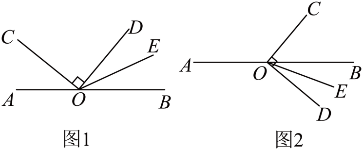
(1)如图1，若α=40°，且OD在直线AB的上方，求∠DOE的度数．
(2)射线OC顺时针旋转一定的角度得到图2，当射线OD在直线AB的下方时，其他条件不变，请你用含α的代数式表示∠DOE的度数．
(3)射线OC从OA出发绕点O顺时针方向旋转到OB，在旋转过程中你发现∠DOE与∠AOC（0°≤∠AOC≤180°，0°≤∠DOB≤180°）之间有怎样的数量关系？请你直接用含α的代数式表示∠DOE的度数．
【答案】(1)∠DOE=25°
(2)∠DOE=12α−45°
(3)∠DOE的度数是45°−12α或12α−45°或45°+12α或135°−12α
【分析】（1）根据α=40°，∠COD=90°，求出∠BOD=50°，根据OE平分∠BOD，即可得出结果；
（2）先用α表示出∠BOC，再根据∠COD=90°表示出∠BOD，根据OE平分∠BOD，即可得出结果；
（3）分四种情况进行讨论，分别求出∠DOE与∠AOC的关系，用含α的代数式表示∠DOE的度数即可．
【详解】（1）解：∵OD⊥OC，
∴∠COD=90°，
∵α=40°，即∠AOC=40°，
∴∠BOD=180°−∠COD−∠AOC=50°，
∵OE平分∠BOD，
∴∠DOE=12∠BOD=25°．
（2）解：∵∠AOC=α，
∴∠BOC=180°−α，
∵OD⊥OC，
∴∠COD=90°，
∴∠BOD=∠COD−∠BOC
=90°−180°−α
=α−90°
∵OE平分∠BOD，
∴∠DOE=12∠BOD=12α−45°．
（3）解：①当0°≤∠AOC≤90°，OD在直线AB的上方时，如图所示：

∠BOD=180°−∠COD−∠AOC
=180°−90°−∠AOC
=90°−∠AOC，
∵OE平分∠BOD，
∴∠DOE=12∠BOD=45°−12∠AOC，
即∠DOE=45°−12α．
②当0°≤∠AOC≤90°，OD在直线AB的下方时，如图所示：

∵∠AOD=∠COD−∠AOC=90°−∠AOC，
∴∠BOD=180°−∠AOD=90°+∠AOC，
∵OE平分∠BOD，
∴∠DOE=12∠BOD=45°+12∠AOC，
即∠DOE=45°+12α．
③当90°＜∠AOC≤180°，OD在直线AB的上方时，如图所示：

∵∠BOC=180°−∠AOC，
∴∠BOD=∠DOC+∠BOC
=90°+180°−∠AOC
=270°−∠AOC，
∵OE平分∠BOD，
∴∠DOE=12∠BOD=135°−12∠AOC，
即∠DOE=135°−12α．
④当90°<∠AOC≤180°，OD在直线AB的下方时，如图所示：

∵∠BOC=180°−∠AOC，
∴∠BOD=∠COD−∠BOC
=90°−180°−∠AOC
=∠AOC−90°，
∵OE平分∠BOD，
∴∠DOE=12∠BOD=12∠AOC−45°，
即∠DOE=12α−45°．
综上分析可知， ∠DOE=45°−12α或∠DOE=45°+12α或∠DOE=135°−12α或∠DOE=12α−45°．
【点睛】本题主要考查了角平分线的定义，垂直的定义，根据α的大小和OD的位置分类讨论，是解决本题的关键．
【变式6-3】（24-25七年级上·重庆·阶段练习）如图1，点O为直线AB上一点，过点O作射线OC、OM、ON．ON始终在OM的右侧，∠BOC=120°，∠MON=a．

(1)如图1，当a=65°．OM平分∠BOC时，求∠NOB的度数：
(2)如图2、当OM与OB边重合，ON在OB的下方时，α=74°，将∠MON绕O点按每秒4°的速度沿逆时针方向旋转α0°<α<180°、使射线ON与∠BOC的角平分线形成夹角为30°，求此时旋转一共用了多少秒：
(3)当∠MON在直线AB上方时，若a=75°，点F在射线OB上，射线OF绕点O顺时针旋转n度0°<n<180°，恰好使得∠FOA=2∠AOM，OH平分∠NOC，∠FOH=130°，请直接写出此时n的值．
【答案】(1)5°
(2)旋转一共用了26s或41s
(3)n为50°或130°
【分析】本题主要考查角度的和差计算，涉及角平分线的性质，分类讨论思想等，根据射线ON的位置不确定，进行分类讨论是解题关键．
（1）由角平分线的性质可得∠MOB的度数，再根据∠NOB=∠MON−∠MOB可得结论；
（2）需要分两种情况进行讨论，①当点N′在OH的右侧时；②当点N在OH的左侧时，画出图形，根据角度之间的和差关系计算即可；
（3）根据题意分两种情况，当0°＜n＜90°和90°＜n＜180°时，画出图形，根据角度的和差运算进行计算即可．
【详解】（1）解：∵∠BOC=120°，OM平分∠BOC，
∴∠MOB=12∠BOC=60°，
∵∠MON=65°，
∴∠NOB=∠MON−∠MOB=5°；
（2）解：由（1）知∠HOB=12∠COB=60°，
设旋转时间为ts，
①当点N′在OH的右侧时，∠HON′=30°，
∴∠N′OB=60°−30°=30°，
∴∠NON′=∠N′OB+∠BON=30°+74°=104°；
∴t=104°÷4°=26；
②当点N″在OH的左侧时，∠HON″=30°，
∴∠NON″=∠N″OH+∠HOB+∠BON=30°+60°+74°=164°；
∴t=164°÷4°=41；
综上，旋转一共用了26s或41s；
（3）解：当0°<n<90°时，如图，
∵∠BOF=n，
∴∠AOF=180°−n，
∵∠FOA=2∠AOM，
∴∠AOM=12∠AOF=90°−12n，
∵∠MON=75°，
∴∠AOM+∠BON=105°，
∴∠BON=15°+12n，
∴∠HON=∠HOF−∠BON−∠BOF=130°−15°+12n−n=115°−32n，∠CON=∠BOC−∠BON=120°−15°+12n=105°−12n，
∵OH平分∠CON，
∴∠CON=2∠HON，
∴105°−12n=2115°−32n，解得n=50°；
当90°<n<180°时，如图，
∵∠BOF=n，
∴∠AOF=180°−n，
∵∠FOA=2∠AOM，
∴∠AOM=12∠AOF=90°−12n，
∵∠MON=75°，
∴∠AOM+∠BON=105°，
∴∠BON=15°+12n，
∴∠HON=360°−∠HOF−∠BON−∠BOF=360°−130°−15°+12n−n=215°−32n，∠CON=∠BOC−∠BON=105°−12n，
∵OH平分∠CON，
∴∠CON=2∠HON，
∴105°−12n=2215°−32n，解得n=130°；
综上，n为50°或130°．
【题型7 线段与角中动态多解问题】
【例7】一副三角板ABC、DBE，如图1放置，（∠D=30°、∠BAC=45°），将三角板DBE绕点B逆时针旋转一定角度，如图2所示，且0°<∠CBE<90°，有下列四个结论：
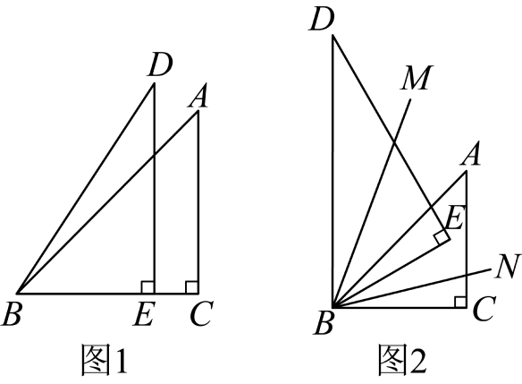
①在图1的情况下，在∠DBC内作∠DBF=∠EBF，则BA平分∠DBF；
②在旋转过程中，若BM平分∠DBA，BN平分∠EBC，∠MBN的角度恒为定值；
③在旋转过程中，两块三角板的边所在直线夹角成90°的次数为3次；
④∠DBC+∠ABE的角度恒为105°．
其中正确的结论个数为（ ）
A．1个 B．2个 C．3个 D．4个
【答案】C
【分析】结合图形根据题意正确进行角的和差计算即可判断．
【详解】①如图可得∠DBA=∠ABF=15°，所以BA平分∠DBF，①正确；
②当0°<∠CBE<45°时，设∠DBM=x，
∵BM平分∠DBA，
∴∠ABM=∠DBM=x，
∴ ∠ABE=60°−2x，∠EBC=45°−60°−2x=2x−15°，
∴∠EBN=x−7.5°，∠MBN=x+60°−2x+x−7.5°=52.5°
当45°<∠CBE<90°时，设∠DBM=x，
∵BM平分∠DBA，
∴∠ABM=∠DBM=x，
∴∠ABE=60°−2x，
∴∠EBC=2x−15°，∠MBE=60°−x
∴∠EBN=∠CBN=x−7.5°，
∴∠MBN=60°−x+x−7.5°=52.5°，故②正确；
③∠CBE=30°时BD⊥BC，∠CBE=45°时AB⊥DE，∠CBE=75°时DB⊥AB故③正确；
④当0°<∠CBE<45°时∠DBC+∠ABE=105°，当45°<∠CBE<90°时∠DBC+∠ABE>105°，故④错误；
综上所述，正确的结论为①②③；
故选：C．
【点睛】本题主要考查了角的和差，角的平分线，旋转的性质，关键根据题意正确进行角的和差计算．
【变式7-1】如图，已知 A，B（B在A的左侧）是数轴上的两点，点A对应的数为8，且AB=12，动点P从点A出发，以每秒2个单位长度的速度沿数轴向左运动，在点P的运动过程中，M，N始终为 AP，BP的中点，设运动时间为t（t>0）秒，则下列结论中正确的有（ ）

①点B对应的数是4；②点P到达点B时，t=6；③BP=2时，t=5；④在点P的运动过程中，线段MN的长度不变
A．4个 B．3个 C．2个 D．1个
【答案】C
【分析】本题考查了数轴，线段中点， ①根据两点间距离进行计算即可；②利用路程除以速度即可；③分两种情况：当点P在点B右边时，当点P在点B左边时，分别求出AP的长，再利用路程除以速度即可；④分两种情况：当点P在点B右边时，当点P在点B左边时，利用线段的中点性质分别进行计算即可．理解题意，进行分类讨论是解决问题的关键．
【详解】解：设点B对应的数是x，
∵点A对应的数为8，且AB=12，
∴8−x=12，
∴x=−4，
∴点B对应的数是−4，故①错误；
由题意得：12÷2=6（秒），
∴点P到达点B时，t=6，故②正确；
当点P在点B右边时，
∵AB=12，BP=2，
∴AP=AB−BP=12−2=10，
∴10÷2=5（秒），
当点P在点B左边时，
∵AB=12，BP=2，
∴AP=AB+BP=12+2=14，
∴14÷2=7（秒），
综上，BP=2时，t=5或7；故③错误；
∵M，N始终为AP，BP的中点，
∴MP=12AP，NP=12BP，
当点P在点B右边时，
MN=MP+NP
=12AP+12BP
=12AB
=12×12
=6，
当点P在点B左边时，
MN=MP−NP
=12AP−12BP
=12AB
=12×12
=6，
∴在点P的运动过程中，线段MN的长度不变，故④正确；
所以，上列结论中正确的有2个，
故选：C．
【变式7-2】（24-25七年级上·湖北武汉·期末）如图所示，已知∠COD=α，∠AOB=β，α+β=180°，且0<α<90°<β<180°．①图中小于平角的角共有6个；②图中所有小于平角的角之和为3β+α；③当∠COD绕点O旋转一周，OE平分∠AOC，OF平分∠BOD，则∠EOF始终等于90°；④若β=130°，α=50°，当∠COD绕点O旋转一周，OG平分∠AOD，OH平分∠BOC，则∠GOH始终等于40°．其中正确的结论 （填序号）
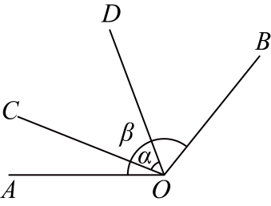
【答案】①②③
【分析】本题考查了角的定义以及角的分类，角平分线的定义，角度和差的计算，根据题意画出图形，分类讨论，逐项分析判断，即可求解．分类讨论是解题的关键．根据角的定义，数出角的个数，即可判断①，根据图形结合已知将①中的6个角相加，即可判断②，分四种情况分别画出图形，根据角平分线的定义结合图形即可判断③，分三种情况讨论，分别画出图形，即可判断④，即可求解．
【详解】解：图中小于平角的角有：∠AOC,∠AOD,∠AOB,∠COD,∠COB,∠DOB，共有6个，故①正确；
②图中所有小于平角的角之和为∠AOC+∠AOD+∠AOB+∠COD+∠COB+∠DOB
=∠AOC+∠COD+∠DOB+∠AOD+∠COB+∠AOB
=∠AOB+∠AOD+∠COB+∠AOB
=∠AOB+∠AOC+∠COD+∠DOB+∠COD+∠AOB
=β+α+β+β
=3β+α，故②正确；
③当∠COD绕点O旋转一周，
如图所示，当∠COD在∠AOB内部时，
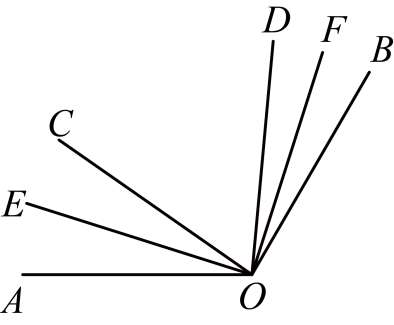
∵OE平分∠AOC，OF平分∠BOD，
∴∠EOC=12∠AOC,∠BOF=12∠BOD，∠AOC+∠BOD=β−α
∴∠EOF=∠EOC+∠COD+∠FOD=12β−α+α=12α+β=90°
当OC在∠AOB内部，OD在∠AOB外部时，
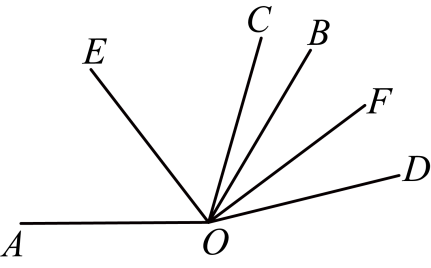
∵OE平分∠AOC，OF平分∠BOD，
∴∠EOC=12∠AOC,∠FOD=12∠BOD，∠AOC+∠BOD=α+β−2∠BOC
∴∠EOF=∠EOC+∠BOF+∠BOC=12β+α−2∠BOC+∠BOC=12α+β=90°
当∠COD在∠AOB外部时
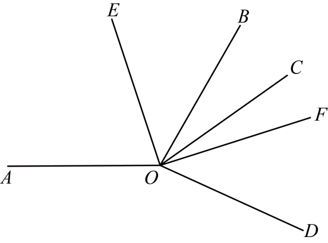
∵OE平分∠AOC，OF平分∠BOD，
∴∠EOC=12∠AOC,∠FOD=12∠BOD，∠AOC+∠BOD=α+β+2∠BOC
∴∠EOF=∠EOC+∠BOF−∠BOC=12β−α+2∠BOC−∠BOC=12α+β=90°
当OD在∠AOB内部，OC在∠AOB外部时，
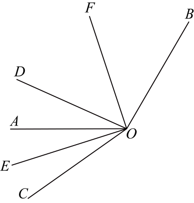
∵OE平分∠AOC，OF平分∠BOD，
∴∠AOE=12∠AOC,∠FOD=12∠BOD，∠AOC+∠BOD=α+β−2∠AOD
∴∠EOF=∠AOE+∠DOF+∠AOD=12β−α−2∠AOD+∠AOD=12α+β=90°
综上所述，∠EOF始终等于90°，故③正确；
④若β=130°，α=50°，当∠COD绕点O旋转一周，
如图所示，当OD在∠GOH的内部，OC在∠GOH外部时，
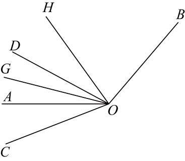
∵OG平分∠AOD，OH平分∠BOC，
∴∠AOG=∠GOD=12∠AOD,∠COH=12∠BOC
∴∠GOH=∠COH−∠COG=12∠BOC−∠COD−12∠AOD
=12∠AOB+∠AOC−∠COD+12∠AOD
=12∠AOB−∠COD+12∠AOD+∠AOC
=12∠AOB−∠COD+12∠COD
=12∠AOB−∠COD
=12×130°−50°
=40°
如图所示，当OD在∠GOH的外部，OC在∠GOH内部时，
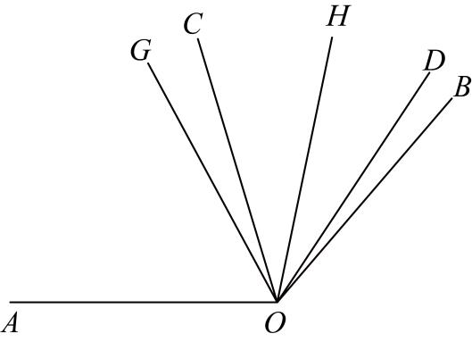
∵OG平分∠AOD，OH平分∠BOC，
∴∠AOG=∠GOD=12∠AOD,∠COH=12∠BOC
∴∠GOH=∠COH+∠COG=12∠BOC+12∠AOD−∠COD
=12∠AOB−∠AOC−∠COD+12∠AOD
=12∠AOB−∠COD+12∠AOD−∠AOC
=12∠AOB−∠COD+12∠COD
=12∠AOB−∠COD
=12×130°−50°
=40°；
如图所示，当OD、OC在∠GOH的外部，
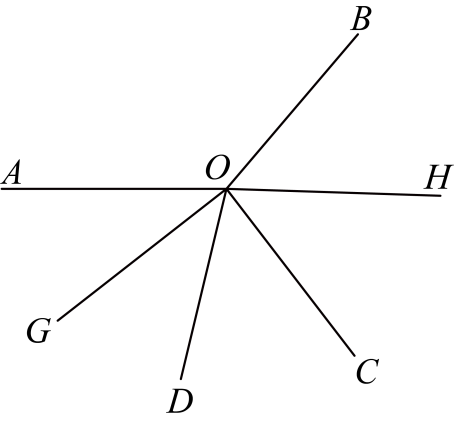
∵OG平分∠AOD，OH平分∠BOC，
∴∠AOG=∠GOD=12∠AOD,∠COH=12∠BOC
∴∠GOH=∠COH+∠COG=12∠BOC+12∠AOD+∠COD
=12360°−∠AOB−∠AOC+∠COD+12∠AOD
=180°−12∠AOB+∠COD+12∠AOD−∠AOC
=180°−12∠AOB+∠COD−12∠COD
=180°−12∠AOB−∠COD
=108°−12×130°−50°
=140°；
∠GOH始终等于40°或140°，故④不正确．
故答案为：①②③．
【变式7-3】如图，C为射线AB上一点，AB=30，AC比BC的14多5，P、Q两点分别从A、B两点同时出发，分别以3单位/秒和2单位/秒的速度在射线AB上沿AB方向运动，运动时间为t秒，M为线段BP上一点，且PM=13PB，N为QM的中点，以下结论：
①BC=2AC；②AB=3NQ；③当PB=12BQ时，t=7.5，
其中正确的是 ．
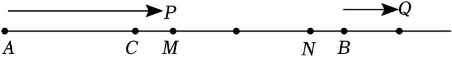
【答案】①
【分析】本题考查有关线段上的动点问题以及两点间的距离，根据已知AB=30，AC比BC的14多5，列方程可得BC=20，进而得AC=10；再由P、Q两点分别以3单位/秒和2单位/秒的速度在射线AB上沿AB方向运动，运动时间为t秒，即得AP、BP的长，找到AC、BC、NQ、PB之间的数量关系即可得结论．
【详解】解：当C在线段AB上时，
∵AB=30，AC比BC的14多5，
∴AB=AC+BC=14CB+5+CB=30，
解得：BC=20，
则AC=BA−BC=10，
∴BC=2AC，
当C在线段AB外时，
∵AB=30，AC比BC的14多5，
∴AB=AC−BC=14CB+5−CB=30，
解得：BC=−1003，不合题意；
故①正确；
∵P、Q两点分别从A、B两点同时出发，分别以3单位/秒和2单位/秒的速度在射线AB上沿AB方向运动，运动时间为t秒，
∴时间为ts时，AP=3t，BQ=2t，
当P在B左边时，BP=AB−AP=30−3t，
∵PM=13PB，
∴PM=1330−3t=10−t，
∴BM=BP−PM=30−3t−10−t=20−2t，
∴QM=BM+BQ=20−2t+2t=20，
∵N为QM的中点，
∴NQ=12QM=10，
∴3NQ=3×10=30，
∴AB=3QN；
当P在B右边时，BP=AP−AB=3t−30，
∵PM=13PB，
∴PM=133t−30=t−10，
∴BM=BP−PM=3t−30−t−10=2t−20，
∴QM=BM+BQ=2t−20+2t=4t−20，
∵N为QM的中点，
∴NQ=12QM=2t−10，此时AB不一定等于3QN；
故②错误，
当P在B左边时，BP=AB−AP=30−3t，BQ=2t，
∴当PB=12BQ时，
则30−3t=12×2t，
解得：t=7.5，
当P在B右边时，BP=AP−AB=3t−30，BQ=2t，
∴当PB=12BQ时，
则3t−30=12×2t，
解得：t=15，
故③错误，
故答案为：①．
【题型8 线段与角中动态新定义问题】
【例8】（24-25七年级上·江苏无锡·阶段练习）定义：从一个角的顶点出发，在角的内部引两条射线，如果这两条射线所成的角等于这个角的一半，那么这两条射线所成的角叫做这个角的内半角．如图①所示，若∠COD=12∠AOB，则∠COD是∠AOB的内半角．

(1)如图①所示，已知∠AOB=70°，∠AOC=15°，∠COD是∠AOB的内半角，则∠BOD=________．
(2)如图②，已知∠AOB=63°，将∠AOB绕点O按顺时针方向旋转一个角度α(0<α<63°)至∠COD，当旋转的角度α为何值时，∠COB是∠AOD的内半角？
(3)已知∠AOB=30°，把一块含有30°角的三角板如图③叠放，将三角板绕顶点O以3°/秒的速度按顺时针方向旋转，如图④，问：在旋转一周的过程中，且射线OD始终在∠AOB的外部，射线OA,OB,OC,OD能否构成内半角？若能，请直接写出旋转的时间；若不能，请说明理由．
【答案】(1)20°
(2)α=21°
(3)当旋转的时间为103s或30s或90s或3503s时，射线OA，OB，OC，OD能构成内半角
【分析】（1）由内半角的定义得∠COD=12∠AOB =35°，再由∠BOD=∠AOB−∠AOC−∠COD即可求解；
（2）由旋转得：∠AOC=∠BOD=α，由角的和差得∠BOC=63°−α，∠AOD=63°+α，再由内半角的定义得∠COB=12∠AOD，即可求解；
（3）分四种情况讨论，利用内半角的含义，建立一元一次方程，即可求解．
【详解】（1）解：∵ ∠AOB=70°，∠COD是∠AOB的内半角，
∴∠COD=12∠AOB
=12×70°
=35°，
∴∠BOD=∠AOB−∠AOC−∠COD
=70°−15°−35°
=20°；
故答案：20°；
（2）解：当旋转的角度α为21°时，∠COB是∠AOD的内半角；
理由如下：
由旋转得：∠AOC=∠BOD=α，
∴∠BOC=∠AOB−∠AOC
=63°−α，
∠AOD=∠AOB+∠BOD
=63°+α，
∵ ∠COB是∠AOD的内半角，
∴∠COB=12∠AOD，
∴63°−α=1263°+α，
解得：α=21°；
（3）在旋转一周的过程中，射线OA，OB，OC，OD能构成内半角，理由如下；
理由：设按顺时针方向旋转一个角度α，旋转的时间为t，
如图1，∵∠BOC是∠AOD的内半角，∠AOC=∠BOD=α，
∴∠AOD=30°+α，
∴1230°+α=30°−α，
解得：α=10°，
∴t=103s；
如图2，∵∠BOC是∠AOD的内半角，∠AOC=∠BOD=α，
∴∠AOD=30°+α，
∴1230°+α=α−30°，
∴α=90°，
∴t=903=30s；
如图3，∵∠AOD是∠BOC的内半角，∠AOC=∠BOD=360−α，
∴∠BOC=360°+30°−α，
∴12360°+30°−α=360°−α−30°，
∴α=270°，
∴t=90s，
如图4，∵∠AOD是∠BOC的内半角，∠AOC=∠BOD=360−α，
∴∠BOC=360°+30°−α，
∴12360°+30°−α=30°+30°−360°+30°−α，
解得：α=350°，
∴t=3503s，
综上所述，当旋转的时间为103s或30s或90s或3503s时，射线OA，OB，OC，OD能构成内半角.
【点睛】本题考查了新定义，旋转的性质，角的和差，一元一次方程的应用，理解新定义，能根据旋转的过程确定时间范围，进行分类讨论是解题的关键．
【变式8-1】（24-25七年级上·辽宁盘锦·期末）点C是直线AB上一动点，当CA=2CB时，我们称点C是点A与点B的衍生点，记作C(A&B)，

【定义理解】
问题（1）若点C在线段AB上时，A表示−3，B表示6时，则C(A&B)表示的数是 ．
【深入研究】
当点C是点A与点B的衍生点时，分别取线段AC，BC的中点M，N，发现线段CM、CN、AB之间存在着一种特殊的数量关系，小明同学觉得若想探寻此问题，需要分两种情况讨论：①点C在线段AB上时；②点C在线段AB的延长线上时．
问题（2）请任意选择①，②中的一种情况，画出图形，猜想线段CM,CN,AB之间满足的数量关系，并说明理由；
【拓展提升】
问题（3）若点C在线段AB上，线段AB=20cm,BC=8cm，动点P、Q分别从A、B两端同时出发，点P以2cm/s的速度沿AB向右运动，终点为B，点Q以3cm/s的速度沿BA向左运动，到达A点后立即返回，终点是B．当一个点到达终点，另一个点也随之停止运动，请求出运动多少秒时，点C是点P与点Q的衍生点．
【答案】（1）3（2）①CM+CN=12AB②CM−CN=12AB（3）当运动时间为1或72或192秒时，点C是点P与点Q的衍生点
【分析】本题主要考查了线段的和差，线段中点的性质，线段中的动点问题，解题的关键是掌握分类讨论的数学思想．
（1）根据新定义，确定线段的长度，然后求点表示的数即可；
（2）①利用线段的中点性质和线段的和差表示数量关系即可；
②利用线段的中点性质和线段的和差表示数量关系即可；
（3）采用分类讨论的思想，根据动点的运动轨迹，结合新定义下的线段长度关系，列方程求解即可．
【详解】解：（1）AB=6−−3=9，
根据题意得，CA=23AB=23×9=6，
∴C(A&B)表示的数是−3+6=3；
（2）①点C在线段AB上时，
如图所示，

∵线段AC，BC的中点分别为点M，N，
∴CM=12AC,CN=12BC，
又∵AC+BC=AB，
∴CM+CN=12AB；
②点C在线段AB的延长线上时，当CA=2CB时，AB=BC，
如图所示，此时，点B是线段AC的中点，即点B与点M重合，

∵点N为线段BC的中点，
∴CN=BN=12BC=12AB，
∴CM−CN=BN=12AB；
（3）点P运动到终点所需时间为20÷2=10秒，点Q运动到终点所需时间是2×20÷3=403秒，设运动时间为t秒，讨论如下：
①如图所示，当PC=2CQ时，根据题意得，
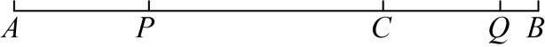
12−2t=28−3t，
解得t=1；
②如图所示，当PC=2CQ时，根据题意得，
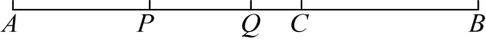
12−2t=23t−8
解得t=72；
③如图所示，当CQ=2CP时，根据题意得，
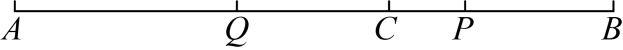
3t−8=22t−12
解得t=16>10（舍去）；
④如图所示，当点Q到达点A折返回来后，PC=2CQ时，根据题意得，
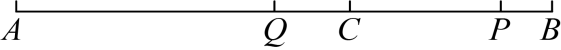
212−3t−20=2t−12
解得t=192；
综上，当运动时间为1或72或192秒时，点C是点P与点Q的衍生点．
【变式8-2】如图1，射线OC在∠AOB的内部，图中共有3个角：∠AOB，∠AOC和∠BOC，若其中有一个角的度数是另一个角度数的两倍，则称射线OC是∠AOB的奇妙线．
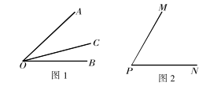
（1）如图1，在∠AOB的内部，∠AOB有_________条奇妙线；
（2）如图2，若∠MPN=60°，射线PQ绕点P从PN位置开始，以每秒20°的速度逆时针旋转，当∠QPN首次等于180°时停止旋转，设旋转的时间为ts．
①直接写出当t为何值时，射线PM是∠QPN的奇妙线？
②若射线PM同时绕点P以每秒12°的速度逆时针旋转，并与PQ同时停止旋转．请求出当射线PQ是∠MPN的奇妙线时t的值．
【答案】（1）3；（2）①t为4.5或6或9 ；②t=54或157或103
【分析】（1）根据奇妙线的定义，若OC是射线OC是∠AOB的奇妙线，有∠AOB=2∠AOC、∠AOC=2∠BOC、∠BOC=2∠AOC三种情况；
（2）①表达出∠QPN、∠QPM=20°t-60°，再分三种情况，根据奇妙线的定义列出方程即可求解；
②表达出∠QPN、∠M’PN、∠M’PQ，再分三种情况，根据奇妙线的定义列出方程即可求解；
【详解】解：（1）若∠AOB=2∠AOC，则OC是射线OC是∠AOB的奇妙线，
若∠AOC=2∠BOC，则OC是射线OC是∠AOB的奇妙线
若∠BOC=2∠AOC，则OC是射线OC是∠AOB的奇妙线
∴在∠AOB的内部，∠AOB有3条奇妙线，
故答案为：3．
（2）①∵∠QPN=20°t，∠MPN=60°
∴∠QPM=20°t-60°
当∠QPN=2∠MPN时，即20°t=120°，解得t=6s，
当∠QPM=2∠MPN时，即20°t-60°=120°，解得t=9s，
当∠MPN=2∠QPM时，即60°=2（20°t-60°），解得t=4.5s，
故答案为：t为4.5或6或9．
②由题意得：∠QPN=20°t，∠M’PN=60°+12°t，∠M’PQ=60°-8°t
当∠M'PQ=2∠QPN时
∴60−8t=2×20t
∴t=54
当∠M'PN=2∠M'PQ时，
∴60+12t=2(60−8t)
∴t=157
当2∠M'PQ=∠QPN时，
∴2(60−8t)=20t
∴t=103
综上所述，当t=54或157或103 时，射线PQ是∠MPN的奇妙线．
【点睛】本题考查了角度计算中的新定义问题，解题的关键是理解题目中给出的奇妙线的定义，再列出方程解答．
【变式8-3】数形结合是数学中常用的思想方法，而数轴是数形结合法解决问题的有效工具．数轴上两点A、B表示的数分别为a、b，若a<b，则A、B两点之间的距离AB=b−a，例：在数轴上点A表示的数是5，点B表示的数是15，则A、B两点间的距离为AB=15−5=10．
【定义】在数轴上，如果线段AB间从左往右的点M1,M2,M3，…，Mn−1将AB线段n等分，则这n−1个点都叫做线段AB的n等分点．若M1是靠近A的第1个n等分点，则记为A<n,1>，M2是靠近A的第2个等分点，则记为A<n,2>，…Mn−1是靠近A的第n−1个n等分点，则记为A<n,n−1>．
【探究一】
如图1，在数轴上两点A、B表示的数分别为a、b，若a<b，则线段AB的二等分点A<2,1>表示的数为a+b−a2=a+b2．
【探究二】
如图2，在数轴上两点A、B表示的数分别为a、b，若a<b，则线段AB上靠近点A的第2个五等分点A<5,2>表示的数为 ．

【应用一】
如图3，（1）在数轴上两点A、B表示的数分别为−10、−2，则线段AB的距离为 ；
（2）数轴上两点C、D表示的数分别为−6、4，则线段CD的距离为 ；
（3）若线段AB上靠近A的四等分点A<4,3>与线段CD上靠近C的十等分点C<10,x>重合，请求出x的值．
【应用二】
如图4，在数轴上两点A、B表示的数分别为−10和−2，若点P从A点以每秒3个单位的速度向右移动，同时点Q从B点以每秒2个单位的速度向左移动，当两点出发时间为t秒时，线段AB上靠近A的等分点A <8,3>与线段PQ的三等分点重合，请直接写出此时的t为 ．

【答案】[探究二]
3a+2b5
[应用以]（1）8
（2）10
（3）2
[应用二]14秒或7秒
【分析】[探究二]根据“探究一”的计算方法求值即可；
[应用一]（1）根据两点之间距离的计算方法计算即可；
（2）根据两点之间距离的计算方法计算即可；
（3）根据题意，点A<4,3>表示的数为−4，点C<10,x>表示的数为x−6，由此列式即可求解；
[应用二]分别表示A<8,3>表示的数，点P,Q表示的数，PQ的值，由线段三等分点的计算方法得到线段PQ靠近点P的三等分点的第一个点<3,1>表示的数为4t−223，三等分的第二个点<3,2>表示的数为−t−143，根据题意列式计算即可求解．
【详解】解：[探究二]a+b−a5×2=3a+2b5，
故答案为：3a+2b5；
[应用一]
（1）点A、B表示的数分别为−10、−2，
∴AB=−2−−10=8，
故答案为：8；
（2）点C、D表示的数分别为−6、4，
∴CD=4−−6=10，
故答案为：10；
（3）线段AB上靠近A的四等分点A<4,3>表示的数为−10+84×3=−4，
线段CD上靠近C的十等分点C<10,x>表示的数为−6+1010·x=x−6，
∴x−6=−4，
解得：x=2；
[应用二]
数轴上两点A、B表示的数分别为−10和−2，点P从A点以每秒3个单位的速度向右移动，同时点Q从B点以每秒2个单位的速度向左移动，出发时间为t秒，
线段AB上靠近A的等分点A <8,3>表示的数为−10+−2−−108×3=−7，
∴点P表示的数为−10+3t，点Q表示的数为−2−2t，
第一种情况，点P在点Q左边，PQ=−2−2t−−10+3t=8−5t，
∴线段PQ靠近点P的三等分点的第一个点<3,1>表示的数为−10+3t+8−5t3=4t−223，
三等分的第二个点<3,2>表示的数为−10+3t+8−5t3×2=−t−143，
∵线段AB上靠近A的等分点A <8,3>与线段PQ的三等分点重合，
∴当4t−223=−7时，t=14（秒）；当−t−143=−7时，t=7（秒）；
第二种情况，点P在点Q右边，PQ=−10+3t−−2−2t=5t−8，
∴线段PQ靠近点Q的三等分点的第一个点<3,1>表示的数为−2−2t+5t−83=−t−143，
三等分的第二个点<3,2>表示的数为−2−2t+5t−83×2=4t−223，
∵线段AB上靠近A的等分点A <8,3>与线段PQ的三等分点重合，
∴当−t−143=−7时，t=7（秒）；当4t−223=−7时，t=14（秒）；
综上所述，线段AB上靠近A的等分点A <8,3>与线段PQ的三等分点重合，此时的t为14秒或7秒，
故答案为：14秒或7秒．
【点睛】本题主要考查数轴上点与有理数的对应，数轴上两点之间距离的计算，等分点的概念及计算方法，一元一次方程的运用等知识的综合，掌握数轴上两点之间距离的计算，一元一次方程的运用方法是解题的关键．